MyArchitecture 10.0 사용자 가이드
사용 설명서 · MyArchitecture 10.0
MyArchitecture v10.0.0 · 저작자: SHKWON (knix008@naver.com)
평면도를 그리면 바로 3D 건물이 되는 건축 설계 프로그램입니다. 벽·문·창·방·계단·지붕·기둥으로 평면을 그리고, 스케치업식 매스로 볼륨을 잡고, 3D 에서 해와 그림자·걷기·단면·입면을 보고, 벽 타입·단계·분류·IFC 속성 같은 BIM 정보를 붙이고, 일람표와 공사비를 뽑고, DXF·IFC·glTF/GLB·OBJ·PDF 등으로 주고받는 일을 한 창에서 합니다.
이 문서는 모든 기능의 참조 설명서입니다. 처음이라면 1장과 3장을 차례로 읽고, 나머지는 필요할 때 찾아보세요. 프로그램 안의 따라 하는 튜토리얼(9장)로 같은 내용을 직접 해 볼 수도 있습니다.
표기 약속
- 메뉴는 파일 → 예제 열기… 처럼 화면에 보이는 한국어 이름 그대로 씁니다. 영어 화면을 쓰는 분을 위해 필요한 곳에는 영어 이름을 괄호로 덧붙였습니다.
- 키는 Ctrl+Z 처럼 씁니다. macOS 에서는 Ctrl 대신 ⌘(Command)도 됩니다.
- 길이 단위는 따로 말하지 않으면 mm 입니다. 프로그램 내부도 모두 mm 로 계산합니다.
목차
1. 시작하기
1.1 설치
| 환경 | 방법 |
|---|---|
| Windows | MyArchitecture-Setup-10.0.0.exe 실행 → 설치 언어(한국어/English) 선택 → 이미 설치된 MyArchitecture 가 있으면 “이미 설치된 MyArchitecture 가 있습니다… 기존 프로그램을 완전히 삭제합니다” 안내(확인 = 이전 설치를 지우고 계속, 취소 = 설치 중단) → %APPDATA%\MyArchitecture 에 이전 데이터가 있으면 “저장한 데이터(설정, 자동 저장)가 있습니다. 삭제하시겠습니까?”(예/아니요) → 설치 폴더 선택. 바탕 화면·시작 메뉴 바로 가기와 .myarch 파일 연결이 만들어집니다. |
| macOS | dmg 를 열고 응용 프로그램 폴더로 끌어 놓습니다. 서명이 없으므로 처음 한 번은 Control-클릭 → 열기. |
| Linux | AppImage(chmod +x 후 실행), .deb(sudo apt install ./MyArchitecture-…deb), .tar.gz |
| 웹 | 소스 폴더에서 npm run serve 후 브라우저로 http://localhost:8642 (다른 포트: PORT=9000 npm run serve). file:// 로 직접 열면 동작하지 않습니다. |
| 소스 | Node.js 22 이상, npm install, npm start |
| 설치 프로그램 만들기 | npm run build:win(Windows NSIS), npm run build:mac(dmg·zip), npm run build:linux(AppImage·deb·tar.gz), npm run build:all(웹판 + 세 운영 체제 모두) |
1.2 실행과 저장 위치
- MyArchitecture 는 한 번에 하나만 실행됩니다. 이미 실행 중일 때
.myarch파일(또는 연결된 DXF·IFC·3D 모델 파일)을 더블클릭하면 열려 있는 창에서 열립니다. - 설정 파일
settings.json위치: Windows%APPDATA%\MyArchitecture, macOS~/Library/Application Support/MyArchitecture, Linux~/.config/MyArchitecture. 웹판은 브라우저localStorage에 저장합니다. - 자동 저장(복구용 사본)은 프로젝트 파일과 별개입니다. 비정상 종료 뒤 다음 실행 때 “…의 저장되지 않은 프로젝트를 복구했습니다. 복원할까요?”라고 묻습니다(7.2절).
- 처음 실행하면 MyArchitecture 10.0에 오신 것을 환영합니다 창이 뜹니다. 네 단계 요약(벽 그리기 → 방·계단·지붕 → 가구 배치 → 3D 로 보고 공유하기)과 예제 열기 / 새 프로젝트 시작 / 확인 단추가 있습니다. 다시 보려면 도움말 → 빠른 둘러보기, 시작할 때마다 보려면 설정 → 일반 → 시작할 때 환영 창 표시.
- 프로그램 폴더에는 튜토리얼 전체를 녹화한 동영상
MyArchitecture-Tutorial.mp4가 들어 있습니다(9.4절).
1.3 화면 구성
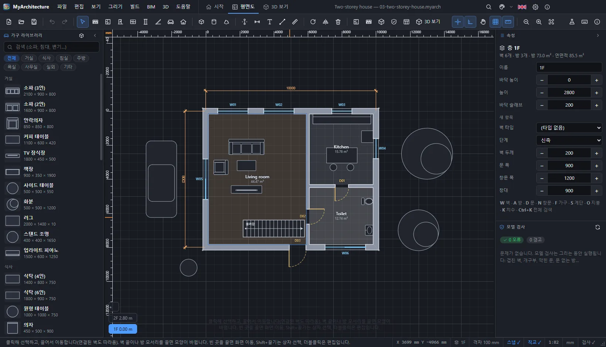
위에서 아래로:
| 영역 | 내용 |
|---|---|
| 제목 표시줄 | 프로그램 아이콘, 메뉴(파일·편집·보기·그리기·빌드·BIM·3D·도움말), 바로 뒤에 보기 탭(시작 / 평면도 / 3D 보기), 문서 제목, 돋보기 단추(명령 팔레트, Ctrl+K), 오른쪽에 테마·언어·설정·정보 단추와 창 단추 |
| 도구 모음 | 보고 있는 탭에 맞는 도구. 맨 앞은 언제나 새로 만들기·열기·저장 / 되돌리기·다시 실행, 맨 끝은 튜토리얼·단축키·정보 |
| 왼쪽 패널 | 평면도: 가구 라이브러리와 CAD 레이어 / 3D: 장면·층·표시·단면과 단계·일조 분석 |
| 가운데 | 시작 페이지, 평면 도면(왼쪽 아래에 층 탭) 또는 3D 화면 |
| 오른쪽 패널 | 평면도: 고른 요소의 속성과 모델 검사 목록 / 3D: 클릭한 요소의 정보 |
| 상태 표시줄 | 힌트와 페이지별 정보 칸, 오른쪽 끝에 창 크기 조절 손잡이 |
자세한 내용은 2장에 있습니다.
1.4 시작 페이지
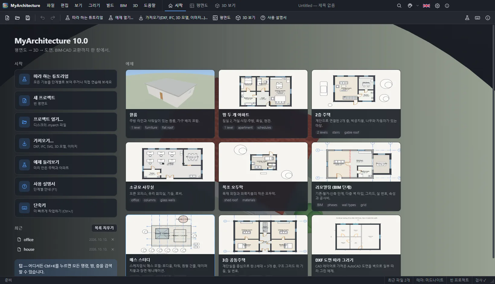
프로그램을 켜면 시작 탭이 열립니다(설정 → 일반 → 시작할 때를 마지막 프로젝트 다시 열기로 바꾸면 데스크톱판은 마지막 파일을 바로 엽니다). 뒤에서는 2층 주택 예제가 3D 로 천천히 돌아갑니다(설정 → 모양 → 애니메이션을 끄면 정지 그림).
왼쪽 시작 카드:
| 카드 | 하는 일 |
|---|---|
| 따라 하는 튜토리얼 | 모든 기능을 단계별로 보여 주거나 직접 연습(9장) |
| 새 프로젝트 | 빈 평면도(Ctrl+N) |
| 프로젝트 열기… | 디스크의 .myarch 파일(Ctrl+O) |
| 가져오기… | DXF, IFC, SVG, 3D 모델, 이미지(Ctrl+I) |
| 예제 둘러보기 | 미리 만든 주택과 아파트(예제 목록 창) |
| 사용 설명서 | 단계별 안내(F1) |
| 단축키 | 더 빠르게 작업하기(Ctrl+/) |
그 아래 최근 목록에는 최근에 열거나 저장한 파일이 설정 → 일반 → 최근 파일 기억 개수만큼(기본 10개, 최대 30개) 보입니다. 항목을 누르면 열리고, 오른쪽 ×(목록에서 제거)는 그 항목만 목록에서 지웁니다(파일은 디스크에 그대로). 목록 지우기는 목록을 비웁니다. 맨 아래에는 날마다 바뀌는 팁이 하나 나옵니다.
오른쪽 예제 카드는 평면 그림으로 먼저 그려졌다가 잠시 뒤 3D 그림으로 바뀝니다. 카드를 누르면 그 예제가 열립니다.
시작 탭에서 도구 모음은 따라 하는 튜토리얼 · 예제 열기… · 가져오기… · 평면도 · 3D 보기 · 사용 설명서 글자 단추를 보여 줍니다.
1.5 예제
파일 → 예제 열기… 또는 시작 페이지 카드로 엽니다. 예제는 읽기 전용 원본에서 열리므로, 고친 내용을 남기려면 다른 이름으로 저장하세요(“예제 … 을(를) 열었습니다. 변경 내용을 남기려면 새 이름으로 저장하세요.”).
| # | 예제 (파일) | 내용 | 이런 기능을 보여 줍니다 |
|---|---|---|---|
| 1 | 원룸 (01-studio.myarch) | 주방 라인과 샤워실이 있는 원룸, 가구 배치 포함 | 1개 층, 가구 라이브러리, 평지붕 |
| 2 | 방 두 개 아파트 (02-two-bedroom.myarch) | 침실 2, 거실·식당·주방, 욕실, 현관 | 방과 면적, 문·창 태그, 일람표 |
| 3 | 2층 주택 (03-two-storey-house.myarch) | 계단으로 연결된 2개 층, 박공지붕, 나무와 자동차가 있는 마당 | 층, 계단, 박공지붕, 실외 가구. 시작 페이지 배경에 쓰이는 대표 예제 |
| 4 | 소규모 사무실 (04-small-office.myarch) | 오픈 오피스, 유리 회의실, 기둥, 로비 | 기둥, 유리 벽 재료, 사무 가구 |
| 5 | 목조 오두막 (05-wooden-cabin.myarch) | 목재 외장과 외쪽지붕의 작은 오두막 | 외쪽지붕, 재료(목재 외장재) |
| 6 | 리모델링 (BIM 단계) (06-renovation-bim.myarch) | 기존·철거·신축 단계, 다층 벽 타입, 그리드, 실 번호, 속성과 공사비 | 단계와 단계 보기, 벽 타입, 구조 그리드, BIM 속성, 공사비 |
| 7 | 매스 스터디 (07-massing-study.myarch) | 스케치업식 매스 모델: 포디움, 타워, 원형 건물, 테이퍼 지붕과 장면 애니메이션 | 매스 상자·원기둥·다각형, 테이퍼, 그룹, 밀기/끌기, 장면 재생 |
| 8 | 3층 공동주택 (08-apartment-block.myarch) | 계단실을 중심으로 한 2세대 × 3개 층, 구조 그리드 위 기둥, 실 번호 | 여러 층, 그리드와 기둥, 실 번호, ‘2F 단면’ 장면 |
| 9 | DXF 도면 따라 그리기 (09-cad-tracing.myarch) | CAD 레이어로 가져온 AutoCAD 도면을 벽으로 일부 따라 그린 예제 | DXF 가져오기, CAD 레이어 표시/숨김, 따라 그리기 |
2. 화면과 조작
2.1 제목 표시줄
제목 표시줄에는 왼쪽부터 다음이 있습니다. 별도의 탭 줄은 없습니다.
- 메뉴: 파일 · 편집 · 보기 · 그리기 · 빌드 · BIM · 3D · 도움말. 메뉴 하나를 연 채 다른 메뉴 이름 위로 마우스를 옮기면 그 메뉴가 바로 열립니다.
- 보기 탭: 시작 · 평면도(F2) · 3D 보기(F3). 평면도 탭에는 모델 검사 결과가 배지로 붙습니다 — 오류가 있으면 오류 개수(빨강), 오류 없이 경고만 있으면 경고 개수(노랑).
- 문서 제목: 프로젝트 제목(프로젝트 속성의 제목), 저장하지 않은 변경이 있으면 ●, 그 뒤에 파일 이름. 창 제목도
● 파일이름 — MyArchitecture 10.0형식입니다. - 돋보기 단추: 명령 팔레트를 엽니다(Ctrl+K). 툴팁은 “명령, 방, 가구 검색… (Ctrl+K)”. 검색 입력 칸은 팔레트 안에 있습니다(2.6절).
- 오른쪽 단추: 팔레트 아이콘(무작위 테마) + ▾(테마 선택 목록), 국기(한국어 화면에서는 영국 국기 = English 로, 영어 화면에서는 태극기 = 한국어로), 톱니바퀴(설정…), ⓘ(MyArchitecture 정보).
제목 표시줄의 어느 것도 숨겨지지 않습니다. 창의 최소 폭이 모든 메뉴·탭·단추가 보이도록 정해지고, 화면이 아주 좁으면 제목 표시줄이 두 줄로 나뉩니다.
2.2 메뉴 한눈에 보기
| 메뉴 | 항목 |
|---|---|
| 파일 | 새 프로젝트, 열기…, 예제 열기…, 최근 파일…, 최근 파일 지우기 / 저장, 다른 이름으로 저장… / 가져오기(DXF, IFC, 3D 모델, 이미지…)…, 가져오기 ▸, 내보내기 ▸ / 인쇄 / PDF…, 프로젝트 속성… / 끝내기 |
| 편집 | 되돌리기, 다시 실행, 되돌리기 기록… / 잘라내기, 복사, 붙여넣기, 복제, 삭제 / 모두 선택, 찾기… / 90° 회전, 좌우 대칭 / 문 뒤집기, 상하 대칭, 크기 조정…, 간격 띄우기… / 그룹, 그룹 해제, 속성… |
| 보기 | 시작 페이지, 평면도, 3D 보기 / 확대, 축소, 화면에 맞추기, 이동 (손) / 격자 표시, 눈금자 표시, 격자와 벽에 스냅, 직교 그리기 (45° 단위) / 치수 표시, 가구 표시, 방 면적 표시, 아래층 표시, 밑그림과 CAD 레이어 표시 / 단계: 모두 보기, 단계: 새 설계, 단계: 기존 건물 / 라이브러리 패널 표시, 속성 패널 표시 / 테마…, 어두운 테마, 밝은 테마, 시스템 테마 / 한국어, English |
| 그리기 | 선택, 벽, 방, 문, 창문, 기둥, 계단, 가구, 지붕 / 매스 상자, 매스 원기둥, 매스 다각형 / 그리드 선, 치수, 텍스트, 선, 측정 |
| 빌드 | 벽에서 방 감지, 맨 위층 지붕, 외벽 치수 넣기 / 맨 위에 층 추가, 층 속성…, 기본 크기 (벽, 문, 창문)…, CAD 레이어… / 모델 검사, 집계와 수량… |
| BIM | 벽 타입…, 선택 요소의 BIM 속성…, 비슷한 요소 선택 / 공사비…, 대지 위치 (일조 분석)… / IFC 내보내기(BIM)…, IFC 가져오기(BIM)… |
| 3D | 3D 보기 / 등각 보기, 평면 보기, 정면 입면 / 걷기 (1인칭), 현재 층에서 단면, 직교 투영, 문 열기, 안개 / 밀기/끌기, 페인트 통, 줄자 / 장면 추가, 장면 애니메이션 재생 / 3D 이미지 저장 (PNG)…, 3D 모델 내보내기(GLB, glTF, OBJ, STL, DAE, 3MF, USDZ, PLY)… |
| 도움말 | 따라 하는 튜토리얼, 사용 설명서, 단축키, 지원 파일 형식…, 빠른 둘러보기 / 설정…, MyArchitecture 정보 |
켜고 끄는 항목(격자 표시, 스냅, 단계 보기, 걷기 등)은 켜져 있으면 ✓ 표시가 붙고, 지금 쓸 수 없는 항목은 흐리게 보입니다. 단축키가 있는 항목은 오른쪽에 키가 적혀 있습니다.
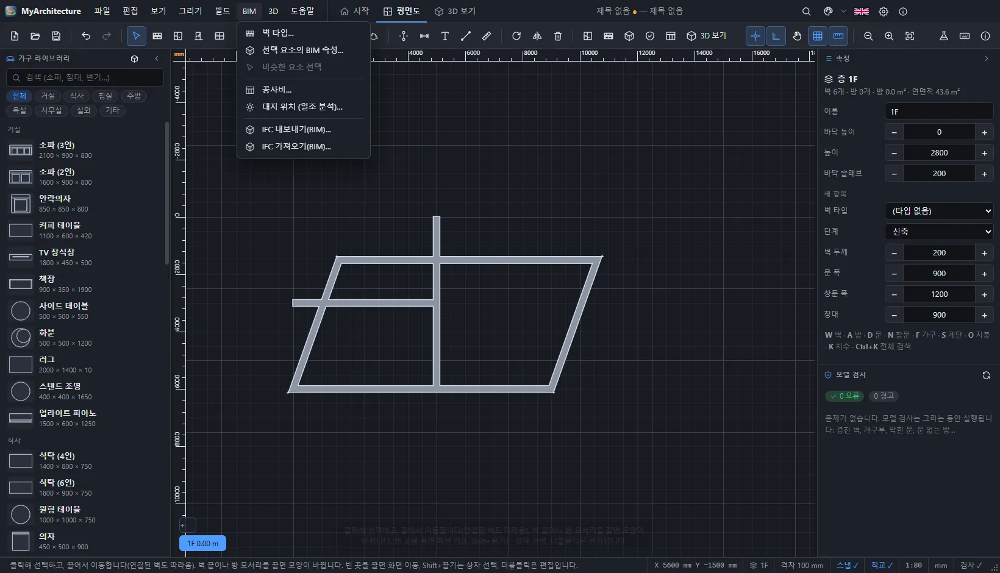
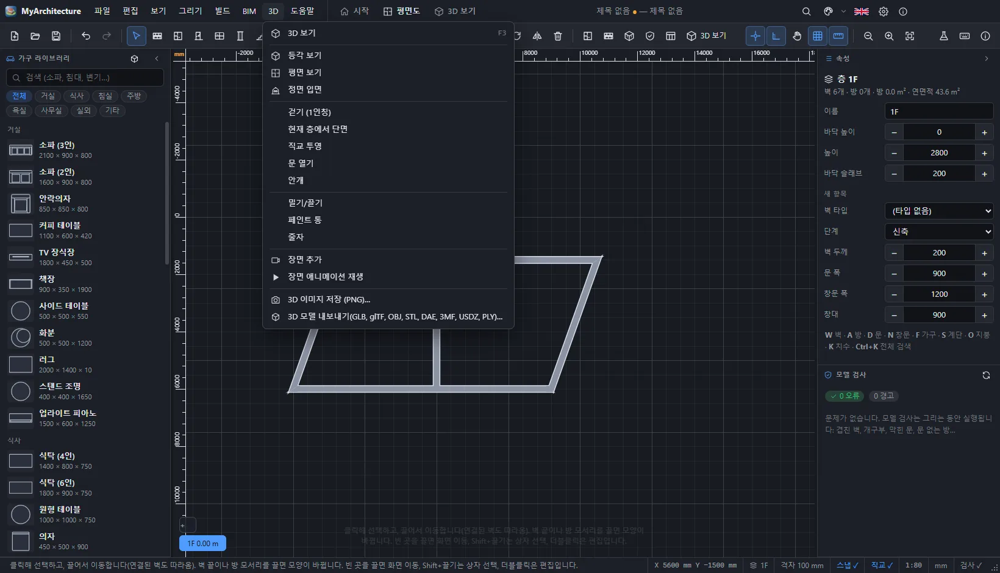
2.3 도구 모음
마우스를 올리면 이름과 단축키가 툴팁으로 나옵니다. 켜진 도구·옵션은 강조됩니다.
- 언제나: 새 프로젝트 · 열기… · 저장 | 되돌리기 · 다시 실행 | … | (오른쪽 끝) 따라 하는 튜토리얼 · 단축키 · MyArchitecture 정보
- 되돌리기/다시 실행 단추의 툴팁은 되돌릴 작업 이름까지 알려 줍니다(예: “되돌리기: 벽 추가 (Ctrl+Z)”). 되돌릴 것이 없으면 흐려집니다.
- 평면도 탭: 선택 · 벽 · 방 · 문 · 창문 · 기둥 · 계단 · 가구 · 지붕 | 매스 상자 · 매스 원기둥 · 매스 다각형 | 그리드 선 · 치수 · 텍스트 · 선 · 측정 | 90° 회전 · 좌우 대칭 · 삭제 | 벽에서 방 감지 · 벽 타입… · 선택 요소의 BIM 속성… · 모델 검사 · 집계와 수량… · 3D 보기 | (오른쪽) 스냅 · 직교 · 이동(손) · 격자 · 눈금자 | 축소 · 확대 · 화면에 맞추기
- 3D 탭: 5.1절 참고.
- 시작 탭: 1.4절 참고.
도구 모음 단추도 절대 숨겨지지 않습니다. 창의 최소 폭이 지금까지 본 가장 넓은 도구 모음에 맞춰지고, 화면 자체가 좁으면 글자 단추가 아이콘으로 줄어들며(툴팁은 그대로), 그래도 넘치면 두 줄로 나뉩니다.
2.4 패널
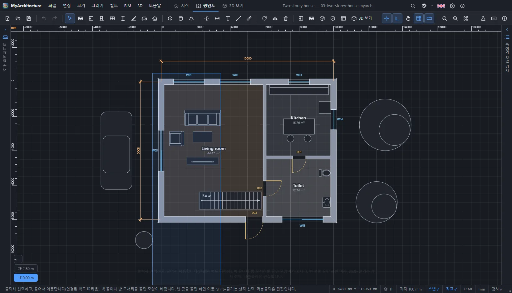
- 왼쪽 패널(Ctrl+1, 보기 → 라이브러리 패널 표시)과 오른쪽 패널(Ctrl+2, 보기 → 속성 패널 표시)은 패널 제목의 < / > 단추(패널 숨기기)로도 접습니다.
- 접힌 패널은 사라지지 않고 아이콘과 세로 제목이 있는 좁은 띠로 남습니다(“가구 라이브러리”, “3D 보기 옵션”, “속성과 모델 검사”, “속성”). 띠를 누르면 다시 펼쳐집니다. 오른쪽 띠에는 모델 검사 오류·경고 개수 배지가 붙습니다.
- 패널과 도면 사이의 경계선을 끌면 폭이 200 ~ 520 px 사이에서 바뀌고, 다음 실행 때도 기억됩니다.
- 시작 탭에서는 양쪽 패널이 없습니다.
오른쪽 패널(속성)의 숫자는 모두 스테퍼입니다: 왼쪽 −, 오른쪽 +, 가운데 값은 직접 입력하고 Enter. 단추를 누르고 있으면 반복되고, 값 칸에서 방향키로도 한 단계씩 바뀝니다. 오른쪽 패널에서 바꾼 값은 하나하나가 되돌리기 한 단계입니다.
2.5 상태 표시줄과 창 크기
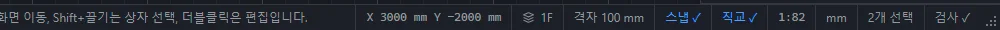
맨 왼쪽 넓은 칸은 지금 도구의 힌트(없으면 “준비”)입니다. 그 뒤 칸들은 보고 있는 페이지에 따라 다르고, 단추처럼 생긴 칸은 눌러서 바꿀 수 있습니다.
| 페이지 | 칸 (왼쪽 → 오른쪽) |
|---|---|
| 평면도 | 커서 좌표 X … Y …(지금 단위, Y 는 위쪽이 +) · 층(누르면 층 속성…) · 격자 100 mm(누르면 10/25/50/100/250/500/1000 mm 중 선택) · 스냅 ✓/—(누르면 전환, F9) · 직교 ✓/—(누르면 전환, F8) · 화면 축척 1:…(96 dpi 기준 근사) · 단위(누르면 mm → cm → m → ft → mm 순환) · n개 선택(고른 것이 있을 때) · 검사 |
| 3D 보기 | 탐색 방식(궤도 회전/이동/걷기 — 누르면 걷기 켜기·끄기) · 원근 투영/평행 투영(누르면 전환) · 단면 ✓/—(누르면 전환) · 표현 스타일 이름 · 삼각형 n개 · n개 선택 · 검사 |
| 시작 | 최근 파일 n개 · 테마: … · 벽 n개(또는 “빈 프로젝트”) · 검사 |
검사 칸은 검사 ✓(문제 없음), 검사 ⚠ n(경고), 검사 ✖ n(오류)으로 보이며 누르면 모델 검사(F5)를 실행합니다(평면도로 이동).
창 크기 조절 손잡이: 상태 표시줄 오른쪽 아래 모서리의 점 무늬를 끌면 창 크기가 바뀝니다(툴팁 “끌어서 창 크기 변경”). 데스크톱판에서만 보이며, 창이 최대화·전체 화면일 때는 숨습니다.
2.6 명령 팔레트와 찾기
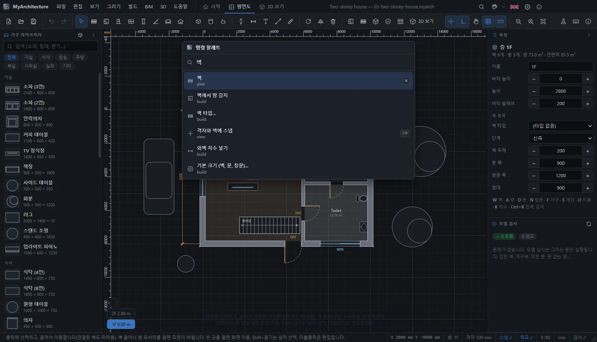
- 명령 팔레트(Ctrl+K 또는 제목 표시줄 돋보기): 모든 명령, 프로젝트의 모든 방(누르면 평면에서 그 방을 선택하고 가운데로), 모든 층(누르면 그 층으로)을 한 목록에서 찾습니다. 입력하면 바로 좁혀지고, ↑/↓ 와 Enter 로 실행, Esc 로 닫습니다. 보기 메뉴 끝의 테마·언어 명령(테마…, 어두운 테마, 밝은 테마, 시스템 테마, 한국어, English)도 여기서 실행할 수 있습니다.
- 찾기…(Ctrl+F, 편집 메뉴): 방, 문·창문(태그로), 가구, 텍스트, 층을 찾아 그 자리로 갑니다.
2.7 확대·축소와 화면 이동 (평면도)
| 동작 | 방법 |
|---|---|
| 확대/축소 | 마우스 휠(커서 기준), 트랙패드 핀치(Ctrl+휠), Ctrl+= / Ctrl+-, 도구 모음 확대·축소. 한 칸 배율은 설정 → 단위와 격자 → 휠 확대/축소 속도(× 0.5 ~ × 3) |
| 전체 보기 | Home, 도구 모음 화면에 맞추기, 빈 곳 오른쪽 클릭 메뉴 |
| 화면 이동 | 빈 곳을 왼쪽 버튼으로 끌기(기본), 가운데 버튼 끌기, 오른쪽 버튼 끌기, Space+끌기, Shift+휠(가로 이동), 두 손가락 터치 |
| 손(이동) 도구 | 보기 → 이동 (손) 또는 도구 모음 손 단추. 켜져 있으면 요소 위에서도 왼쪽 끌기가 화면 이동입니다. Esc 나 단추로 끕니다 |
가운데 끌기·오른쪽 끌기·Space+끌기는 어떤 도구를 쓰는 중에도 항상 화면 이동입니다. 오른쪽 버튼을 움직이지 않고 떼면 오른쪽 클릭 메뉴가 열립니다.
설정 → 단위와 격자 → 빈 캔버스에서 왼쪽 끌기를 상자 선택으로 바꾸면 빈 곳 끌기가 상자 선택이 되고, 이동은 가운데·오른쪽·Space 끌기로 합니다.
2.8 격자와 눈금자
- 격자: 기본은 선 (5 × 5) — 가는 선과 5칸마다 또렷한 선. 격자 간격(스냅 간격)은 설정 → 단위와 격자 → 격자, 또는 상태 표시줄의 격자 칸에서 10 / 25 / 50 / 100 / 250 / 500 / 1000 mm 로 바꿉니다(기본 100 mm). 격자 모양은 선(5 × 5)/점. 도구 모음·보기 메뉴의 격자 표시로 켜고 끕니다.
- 눈금자: 도면 위·왼쪽 가장자리에 지금 단위로 표시되고, 커서 위치가 주황색으로 표시됩니다. 눈금자 표시로 켜고 끕니다.
2.9 선택
| 동작 | 결과 |
|---|---|
| 클릭 | 하나 선택. 그룹에 속한 요소는 그룹 전체가 선택됨 |
| Alt+클릭 | 그룹 안에서 하나만 선택 |
| Shift+클릭 또는 Ctrl+클릭 | 선택에 넣기/빼기 |
| Shift+끌기 또는 Ctrl+끌기 | 상자 선택(4.1절) |
| 빈 곳 클릭 | 선택 해제(Esc 도 같음) |
| Ctrl+A | 지금 층의 모두 선택 |
| 더블클릭 | 속성 창(4.10절) |
마우스를 요소 위에 올리면 강조되고, 커서가 이동(✥) 모양이 됩니다. 손잡이(벽 끝, 방·지붕 꼭짓점, 치수·그리드 끝) 위에서는 십자 커서가 됩니다.
평면·3D 연동 선택: 평면에서 고르면 3D 에서 같은 요소가 파랗게 강조되고, 3D 에서 클릭하면 평면에서 선택됩니다. 설정 → 평면도 → 평면·3D 연동 선택(“평면에서 선택하면 3D에서 강조되고, 그 반대도 마찬가지”)으로 켜고 끕니다.
2.10 되돌리기와 다시 실행
- 되돌리기 Ctrl+Z, 다시 실행 Ctrl+Y 또는 Ctrl+Shift+Z. 실행하면 “되돌리기: 벽 추가”처럼 잠깐 알림이 뜹니다.
- 같은 명령이 도구 모음(툴팁에 단계 이름), 편집 메뉴, 그리고 평면 도면·층 탭·3D 화면의 오른쪽 클릭 메뉴 맨 위에 있습니다.
- 한 번 끌기(이동, 모양 바꾸기, 밀기/끌기)는 되돌리기 한 단계입니다. 최대 200 단계까지 기억합니다.
- 편집 → 되돌리기 기록…: 지난 작업 목록(맨 위가 최신)에서 한 항목을 누르면 그 작업 이전까지 한 번에 되돌립니다.
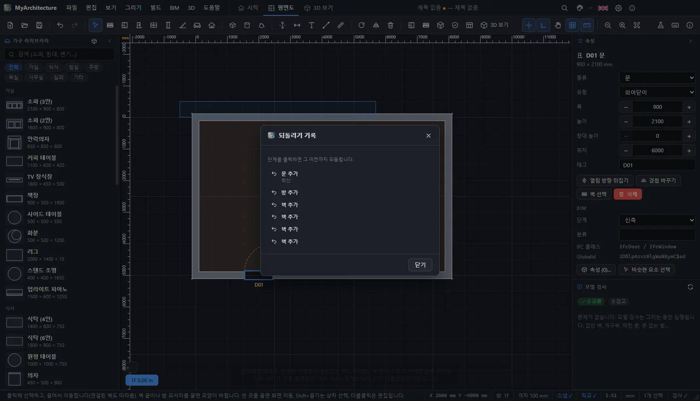
- 입력 칸에 글자를 쓰는 중에는 Ctrl+Z 가 그 칸의 글자 되돌리기로 동작합니다.
3. 평면 그리기
평면도 탭(F2)에서 그립니다. 도구 키를 누르거나 도구 모음·그리기 메뉴에서 고르면 도구가 바뀌고, 상태 표시줄(그리고 도면 아래쪽)에 그 도구의 힌트가 나옵니다. Esc 는 그리던 것을 끝내고, 한 번 더 누르면 선택 도구로 돌아갑니다.
3.1 도구 목록
| 도구 | 키 | 하는 일 |
|---|---|---|
| 선택 (Select) | Esc | 클릭 선택, 끌어서 이동, 손잡이로 모양 바꾸기 |
| 벽 (Wall) | W | 모서리를 차례로 클릭해 벽 |
| 방 (Room) | A | 벽 안쪽 클릭 → 방과 면적 |
| 문 (Door) | D | 벽 위 클릭 |
| 창문 (Window) | N | 벽 위 클릭 |
| 기둥 (Column) | C | 클릭해 놓기 |
| 계단 (Stair) | S | 아래쪽, 위쪽 두 점 |
| 가구 (Furniture) | F | 가구 검색 창 → 클릭해 놓기 |
| 지붕 (Roof) | O | 건물 안 클릭 → 외곽선 지붕 |
| 매스 상자 (Mass box) | B | 마주 보는 두 모서리 |
| 매스 원기둥 (Mass cylinder) | U | 중심, 원 위의 점 |
| 매스 다각형 (Mass shape) | — | 모서리를 차례로 클릭 |
| 그리드 선 (Grid line) | G | 구조 그리드 선의 두 끝 |
| 치수 (Dimension) | K | 두 점 → 간격 → 클릭 |
| 텍스트 (Text) | T | 클릭하고 입력 |
| 선 (Line) | L | CAD 레이어에 작도선 |
| 측정 (Measure) | M | 두 점 사이 거리(도면에 남지 않음) |
3.2 스냅과 직교
그리는 동안 커서 표시가 무엇에 붙었는지 알려 줍니다.
| 표시 | 뜻 |
|---|---|
| 주황 네모 | 벽 끝점, 방·CAD 선의 꼭짓점, 기둥 중심 |
| 초록 삼각형 | 벽 중심선 위(벽을 따라 격자 간격으로) |
| 십자 | 격자점 또는 직교 방향 위의 점 |
| 주황 점선 | 다른 벽 끝과 가로·세로로 줄이 맞음(정렬 안내선) |
- 스냅(F9, 보기 → 격자와 벽에 스냅, 상태 표시줄): 끝점·꼭짓점 → 벽 → 격자 순서로 붙습니다. 끄면 커서 위치 그대로입니다.
- 직교(F8, 보기 → 직교 그리기 (45° 단위)): 벽·선·방·지붕·계단을 그릴 때 방향이 45° 단위로, 길이가 격자 단위로 맞춰집니다. 그 방향으로 가다 다른 벽의 중심선과 만나면 정확히 그 위에서 끝납니다.
- Shift 를 누른 채 그리면 그 순간만 자유 각도입니다.
3.3 벽
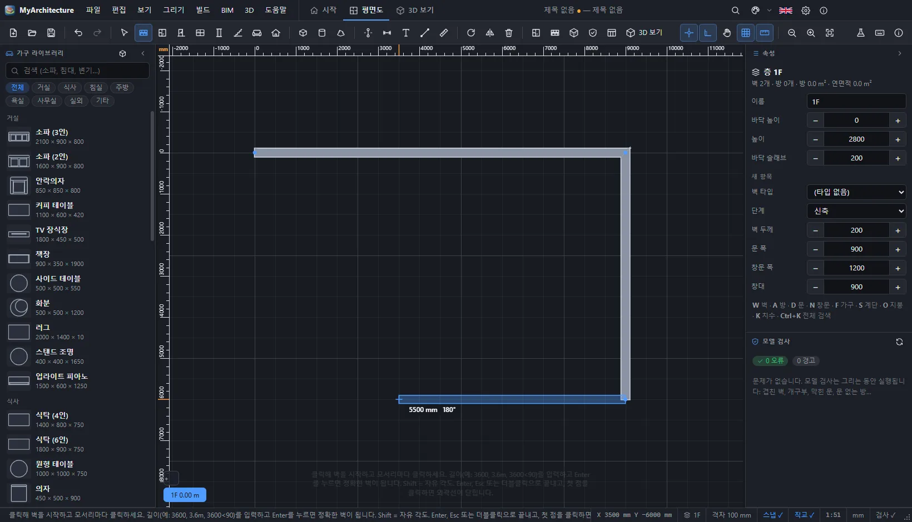
- W 를 누르고 시작점을 클릭합니다.
- 모서리마다 클릭합니다. 커서 옆에 지금 벽의 길이와 각도(화면 기준 반시계 방향, 0° = 오른쪽)가 표시되고, 두께만큼의 파란 미리 보기가 따라옵니다.
- 끝내기: Enter, Esc, 더블클릭, 같은 점을 다시 클릭, 또는 첫 점을 클릭(외곽선이 닫히며 끝남). 오른쪽 클릭도 그리기를 끝냅니다.
- Backspace 는 그리는 중에 마지막 모서리(벽)를 되돌립니다.
다 그리면 방금 그린 벽들이 선택되고 “벽 n개를 그렸습니다. A를 누르고 그 안쪽을 클릭하면 방이 만들어집니다.”라고 안내합니다.
새 벽의 두께·재료·벽 타입·단계는 다음을 따릅니다.
- 오른쪽 패널(아무것도 고르지 않았을 때)의 새 항목 칸: 벽 타입, 단계, 벽 두께(그리고 문 폭, 창문 폭, 창대).
- 빌드 → 기본 크기 (벽, 문, 창문)… 의 벽 두께·벽 재료.
- 벽 타입을 고르면 두께는 그 타입 레이어 두께의 합입니다.
- 새 벽의 높이는 따로 정하지 않으면 층 높이를 따릅니다.
길이 입력
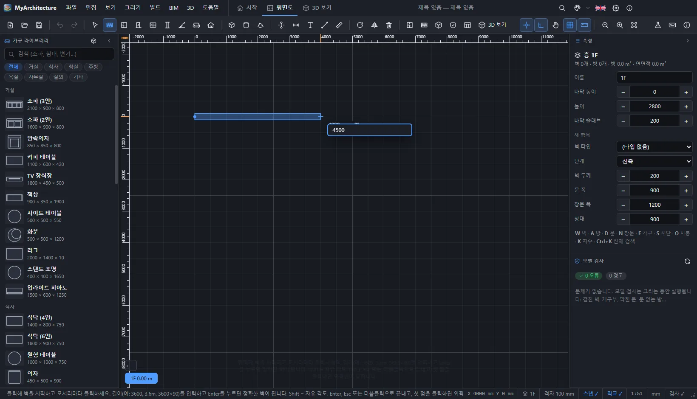
벽(또는 선)을 그리는 중에 숫자나 . 을 치면 커서 옆에 길이 입력 칸(“길이(mm, 3.6m, 3600<90)”)이 열립니다. 입력하고 <kbd>Enter 를 누르면 지금 커서 방향으로 정확한 길이의 벽이 놓이고 그리기는 계속됩니다.
| 입력 예 | 뜻 |
|---|---|
3600 | 3600 mm (단위가 없으면 mm) |
3.6m | 3.6 m = 3600 mm |
360cm | 360 cm |
3600mm | 3600 mm |
120in, 120" | 120 인치 |
12'6", 12'6, 12' | 12 피트 6 인치 / 12 피트 |
3600<90 | 길이 3600, 각도 90°(화면 기준 반시계 방향: 0° 오른쪽, 90° 위, 180° 왼쪽, 270° 아래) |
3,6m | 쉼표도 소수점으로 읽습니다 |
각도를 주지 않으면 지금 커서가 있는 방향(직교가 켜져 있으면 45° 단위로 맞춘 방향)으로 놓입니다.
벽 이음
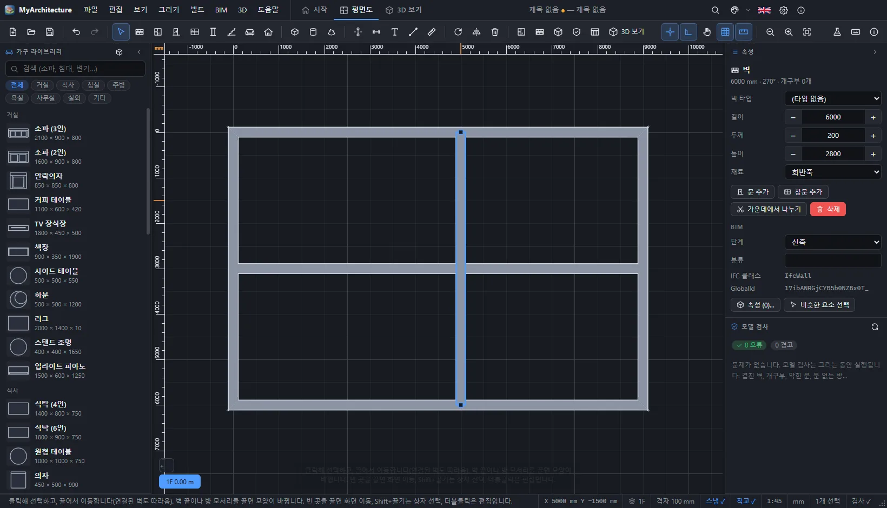
벽 끝이 다른 벽의 끝이나 중심선에 닿으면 L 자, T 자, 십자 이음이 자동으로 깔끔하게 그려집니다(벽을 잘라 붙일 필요가 없습니다). 칸막이 벽은 끝을 외벽 위에 놓기만 하면 됩니다.
벽 고치기
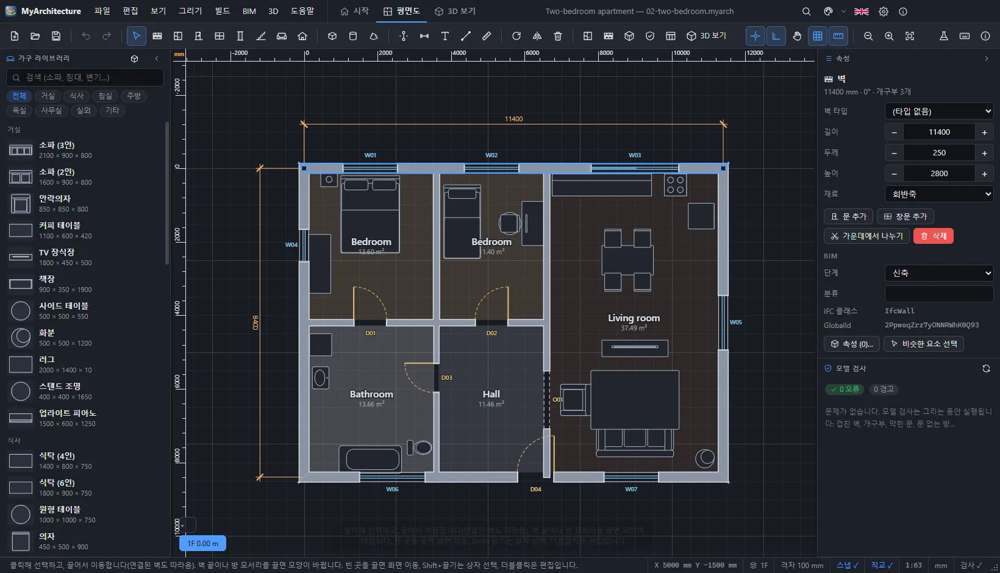
벽을 선택하면 오른쪽 패널 제목에 길이 · 각도 · 개구부 수가 보이고, 다음 칸이 있습니다.
| 칸 | 설명 |
|---|---|
| 벽 타입 | (타입 없음) 또는 벽 타입 목록. 고르면 두께가 레이어 합으로 바뀜 |
| 길이 | 바꾸면 끝점이 움직이고 그 끝에 이어진 벽도 따라감 |
| 두께 | 직접 바꾸면 벽 타입이 풀림 |
| 높이 | 층 높이와 같으면 층 높이를 따름(층 높이를 바꾸면 함께 바뀜) |
| 재료 | 벽 재료(12.3절) |
단추: 문 추가, 창문 추가(누른 뒤 벽을 클릭), 가운데에서 나누기, 삭제. 그 아래 BIM 칸(6장).
- 벽 끝 손잡이(작은 네모)를 끌면 그 끝만 움직입니다. 벽 몸통을 끌면 벽 전체가 움직이고 이어진 벽들이 늘어나며 따라옵니다(Alt+끌기는 이어진 벽을 늘리지 않고 이동).
- 벽 위 오른쪽 클릭 메뉴: 여기에 문 추가, 여기에 창문 추가, 여기서 벽 나누기, 일직선 벽 합치기(지금 층에서 한 줄로 이어진 벽들을 하나로).
- 더블클릭(또는 E)하면 벽 속성 창: 길이, 두께, 높이(+ 층 높이와 같게), 재료.
3.4 방
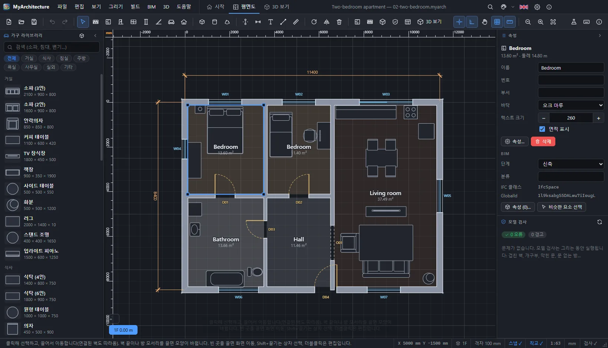
- A 를 누르고 닫힌 벽 안쪽을 클릭하면 벽 안쪽 면을 따라 방이 생깁니다. 이름은 크기에 맞게 자동으로 붙고(예: 거실, 침실, 욕실 …), 면적이 알림으로 나옵니다(“방 "…"을(를) 추가했습니다: … m². 두 번 클릭하면 이름을 바꿀 수 있습니다.”).
- Shift+클릭으로 시작하면 모서리를 직접 찍어 그립니다. 첫 점을 다시 클릭하거나 Enter 로 끝냅니다. 그리는 동안 면적이 커서 옆에 보입니다.
- 빌드 → 벽에서 방 감지(빈 곳 오른쪽 클릭 → 방 감지): 지금 층에서 닫힌 공간 중 아직 방이 없는 곳을 모두 방으로 만듭니다.
- 바닥 재료는 기본 오크 마루(기본 크기 창의 바닥 재료로 바꿈).
방을 선택하면 오른쪽 패널에 면적·둘레가 보이고, 이름, 번호(실 번호), 부서(용도), 바닥(재료), 텍스트 크기, 면적 표시 칸이 있습니다. 꼭짓점 손잡이를 끌면 모양이 바뀝니다(방 하나만 골랐을 때). 더블클릭하면 방 속성 창(이름은 거실·침실·주방·식당·욕실·변기·홀·현관·서재·다용도실·창고·드레스룸·발코니·차고·사무실·회의실·복도·계단 목록에서 고르거나 직접 입력).
3.5 문과 창문
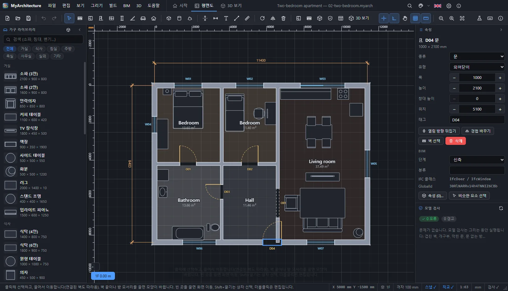
- D(문) 또는 N(창문)을 누르고 벽 위로 커서를 옮기면 미리 보기와 폭이 나옵니다. 클릭하면 들어갑니다.
- 위치는 벽을 따라 격자의 반 칸 단위로 맞춰지고, 벽 끝을 넘지 않도록 조정됩니다.
- 문은 커서가 있는 쪽으로 열리고, 경첩은 클릭한 곳에 가까운 쪽 끝에 붙습니다.
- 벽이 너무 짧으면 “이 벽은 너무 짧아 넣을 수 없습니다.”, 이미 문·창이 있으면 “그 자리에 이미 문이나 창문이 있습니다.”
- 새 문·창의 크기와 종류: 기본 크기 창(문 폭 900, 문 높이 2100, 창문 폭 1200, 창문 높이 1200, 창대 900 이 처음 값), 오른쪽 패널의 새 항목 칸.
선택한 문·창:
| 키·단추 | 하는 일 |
|---|---|
| X / 열림 방향 뒤집기 | 문이 열리는 쪽(벽의 어느 면) 바꾸기 |
| H / 경첩 바꾸기 | 경첩을 반대쪽 끝으로 |
| 벽 선택 | 이 문·창이 달린 벽 선택 |
오른쪽 패널 칸: 종류(문 / 창문 / 개구부), 유형(문: 외여닫이·양개·미닫이·차고, 창문: 여닫이창·고정·미닫이), 폭, 높이, 창대 높이, 위치(벽 시작점에서 중심까지 거리), 태그. 태그는 비워 두면 문 D01, D02…, 창 W01…, 개구부 O01… 이 층·위치 순서로 자동으로 붙습니다. 더블클릭하면 문 속성 / 창문 속성 창(위 항목 + 여닫는 쪽 “벽 왼쪽/벽 오른쪽”, 경첩 “벽 시작점에서/벽 끝에서”).
문·창은 벽에 붙어 있으므로 벽을 옮기거나 늘이면 함께 움직입니다. 벽을 지우면 그 벽의 문·창도 지워집니다.
3.6 가구
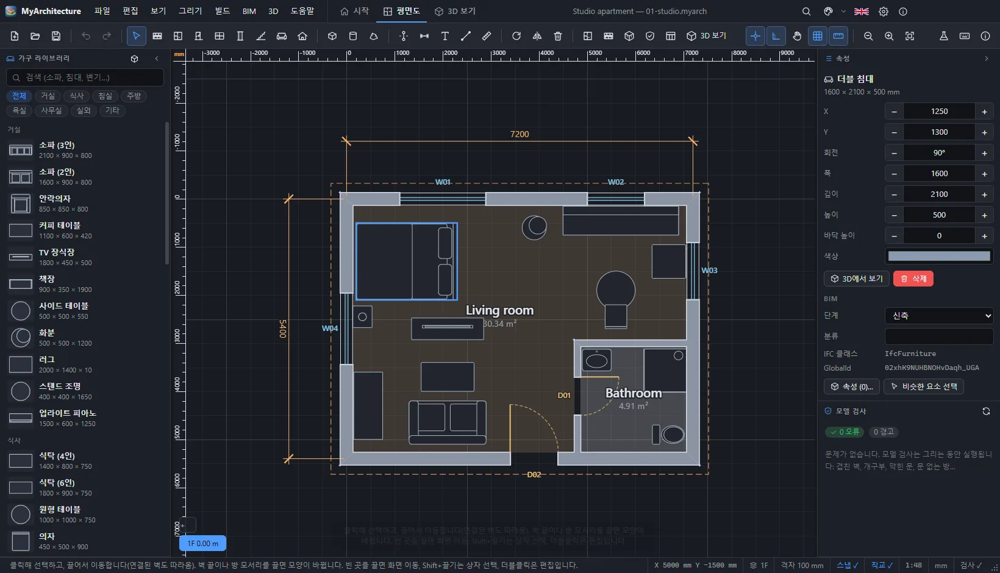
가구 라이브러리(왼쪽 패널):
- 위쪽 검색 칸(“검색 (소파, 침대, 변기…)”)과 분류 칩: 전체 · 거실 · 식사 · 침실 · 주방 · 욕실 · 사무실 · 실외 · 기타. 검색 칸에서 Enter 를 누르면 첫 항목을 고릅니다.
- 검색어도 분류도 없을 때는 맨 위에 최근 사용 가구(최대 10개)가 나옵니다.
- 항목마다 평면 모양 그림과
폭 × 깊이 × 높이. - 항목을 누른 뒤 도면을 클릭하거나, 항목을 도면으로 끌어다 놓으면 배치됩니다.
- 가져온 3D 모델(7.4절)도 목록 아래에 나와 같은 방법으로 놓습니다. 패널 제목의 3D 모델 단추는 3D 모델 가져오기(OBJ, FBX, GLB, STL…)….
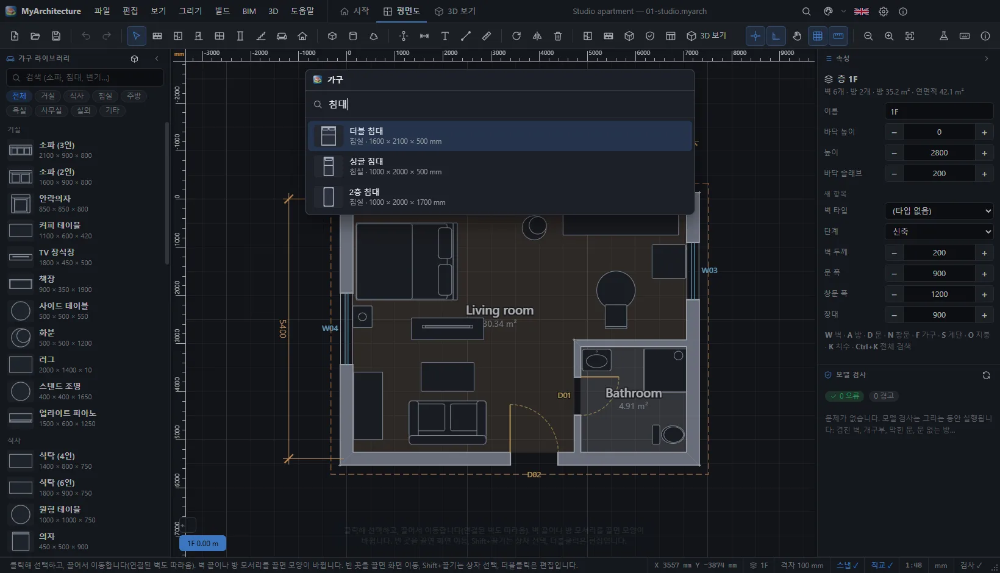
F(가구 검색): “가구 — 이름을 입력하세요(소파, 침대, 싱크대, 자동차 …)” 창에서 이름을 치고 Enter → 도면을 클릭. 최근에 쓴 가구가 위쪽에 옵니다.
놓는 중에는:
| 키 | 하는 일 |
|---|---|
| R | 미리 보기를 90° 회전 |
| Shift+R | 15° 회전 |
| Shift+클릭 | 놓고 나서도 같은 가구를 계속 놓기 |
| Esc | 놓기 멈춤 |
가구는 격자의 반 칸 단위로 놓이고 움직입니다(끌 때 Shift 를 누르면 가로·세로로만). 선택하면 오른쪽 패널에 X, Y, 회전, 폭, 깊이, 높이, 바닥 높이(바닥에서 띄운 높이), 색상 칸과 3D에서 보기 단추가 있습니다. 더블클릭하면 이름·종류(다른 가구로 바꾸기)까지 바꿀 수 있습니다. 전체 목록은 12.3절.
3.7 계단
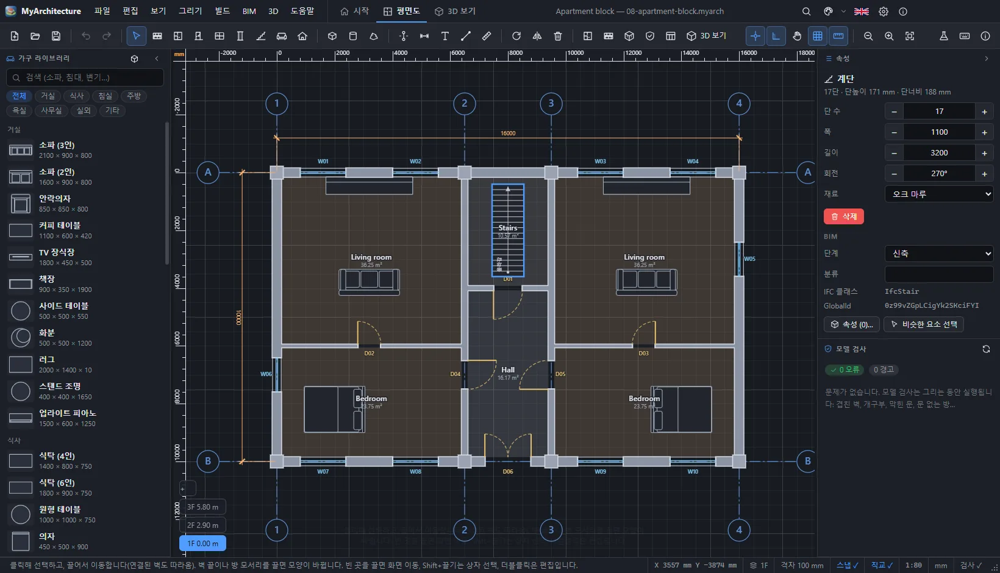
- S 를 누르고 계단 아래쪽을 클릭, 그다음 위쪽을 클릭합니다(직교가 켜져 있으면 45° 단위). 600 mm 보다 짧으면 만들어지지 않습니다.
- 단 수는 층 높이(+ 슬래브)를 약 175 mm 로 나눠 자동으로 정해집니다(최소 3단). 폭은 기본 크기의 계단 폭(처음 1000 mm).
- 선택하면 제목에 “n단 · 단높이 … mm · 단너비 … mm” 가 보이고, 단 수, 폭, 길이, 회전, 재료 칸이 있습니다. 단높이가 200 mm 를 넘으면 “챌판이 200 mm를 넘으면 가파릅니다. 단을 늘리세요.” 경고가 나옵니다.
- 평면에는 진행 방향 화살표와 “올라감” 글자가 그려지고, 3D 에서는 디딤판으로 만들어집니다.
3.8 기둥
- C 를 누르고 클릭합니다. 벽 끝(모서리)에 잘 붙습니다. 놓기 전에 R 로 돌릴 수 있습니다.
- 크기는 프로젝트 기본 400 × 400 mm. 선택하면 모양(사각형/원형), 폭, 깊이, 회전, 재료. 높이는 층 높이를 따릅니다.
3.9 지붕
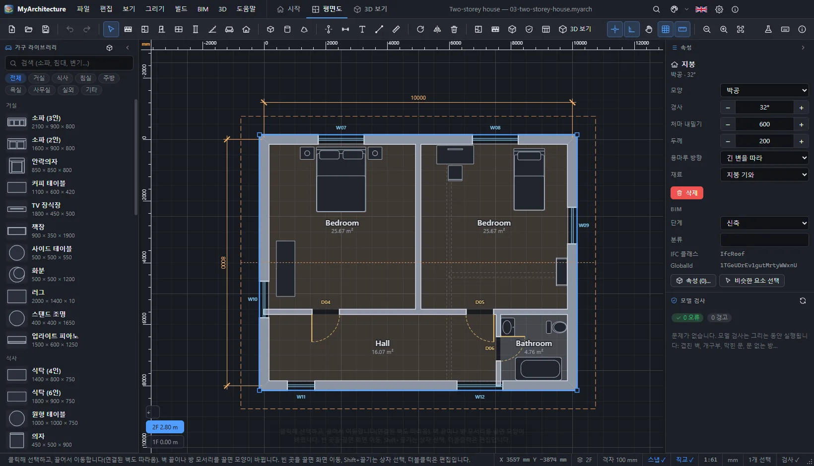
지붕을 만드는 세 가지 방법:
- 빌드 → 맨 위층 지붕: 맨 위층의 닫힌 외벽 윤곽마다 지붕을 얹습니다(모양은 설정 → 평면도 → 새 지붕, 기본 박공, 경사 30°, 처마 500). 다시 실행하면 이전에 자동으로 만든 지붕을 바꿔 줍니다. 닫힌 윤곽이 없으면 “맨 위층에 닫힌 벽 윤곽이 없습니다.”
- O 를 누르고 건물 안을 클릭: 그 층 외벽 윤곽 위에 지붕(처마 400).
- O 다음 Shift+클릭으로 지붕 외곽선을 직접 그리기(Enter 로 마침).
지붕은 그 층 벽 위에 얹힙니다. 평면에서는 점선으로 표시됩니다(설정 → 평면도 → 지붕 (점선)).
선택하면: 모양(박공 / 모임 / 외쪽 / 평), 경사(0 ~ 75°), 처마 내밀기, 두께, 용마루 방향(긴 변을 따라 / 가로질러), 재료(지붕 기와·슬레이트·금속 지붕·콘크리트). 꼭짓점 손잡이로 모양을 바꿉니다.
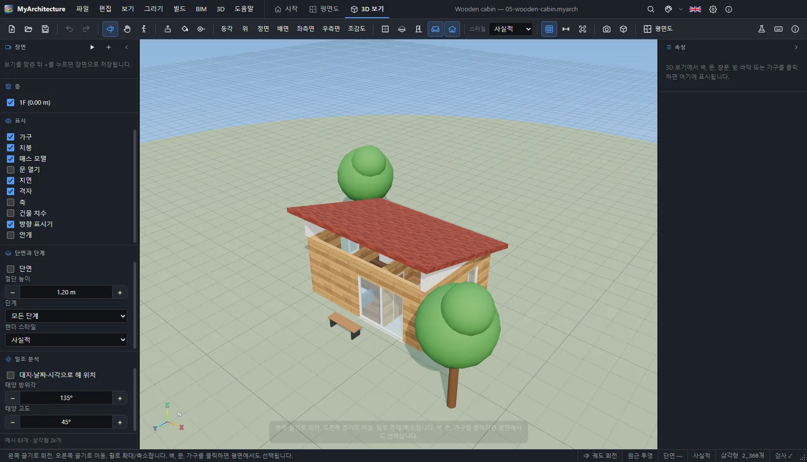
3.10 층
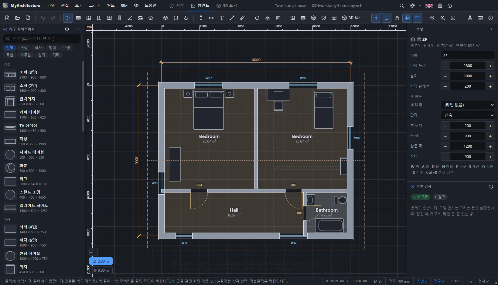
도면 왼쪽 아래에 층 탭이 아래층부터 위로 쌓여 있습니다(1F 0.00 m 처럼 이름과 바닥 높이).
| 동작 | 결과 |
|---|---|
| 탭 클릭 | 그 층 편집. 그리기는 지금 층에만 됩니다 |
| 탭 더블클릭 | 이름 바꾸기 |
| + 탭 | 맨 위에 층 추가 — 맨 위층의 벽과 창문을 복사(문은 복사하지 않음) |
| 탭 오른쪽 클릭 | 되돌리기 · 다시 실행 / 층 이름 바꾸기… · 층 속성… · 층 복제(벽, 문, 창문) / 층 삭제 |
- 빌드 → 맨 위에 층 추가는 + 탭과 같습니다. 새 층 이름은
2F,3F…, 바닥 높이는 아래층 높이 + 층고. - 층 복제(벽, 문, 창문) 는 그 층의 벽·문·창·방을 복사해 맨 위에 새 층을 만듭니다.
- 층 삭제는 그 층과 그 위의 모든 요소를 지웁니다(확인을 묻고, 층이 하나뿐이면 지울 수 없음).
- 층 속성…(빌드 메뉴, 상태 표시줄 층 칸): 이름, 바닥 높이, 높이(층고, 최소 1000), 바닥 슬래브. “높이를 따로 지정하지 않은 벽은 층 높이를 사용합니다. 층을 위아래로 옮기면 그 층의 모든 요소가 3D에서 함께 움직입니다.” 아무것도 선택하지 않았을 때 오른쪽 패널에도 같은 칸이 있고 층 요약(벽·방 수, 방 면적, 연면적)이 나옵니다.
- 아래층은 흐리게 겹쳐 보입니다(보기 → 아래층 표시).
- 구조 그리드 선은 모든 층에 공통입니다.
3.11 치수, 텍스트, 선, 측정
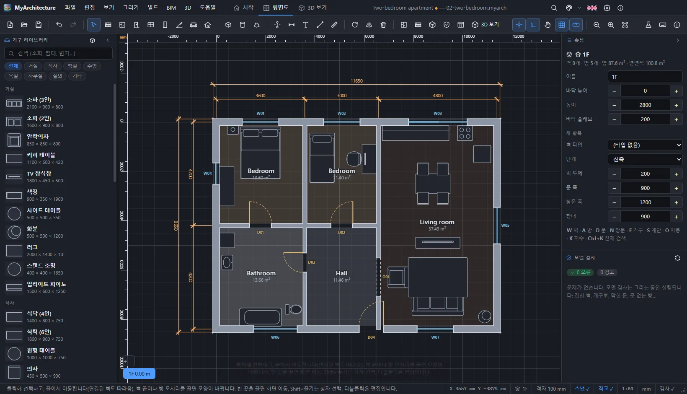
- 치수 K: 두 점을 클릭하고, 마우스를 움직여 치수선 위치(간격, 50 mm 단위)를 정한 뒤 한 번 더 클릭. 점은 벽 끝·벽에 붙습니다. 선택하면 간격과 텍스트 재정의(숫자 대신 쓸 글자), 끝 손잡이로 점 이동.
- 빌드 → 외벽 치수 넣기(빈 곳 오른쪽 클릭 → 자동 치수): 지금 층 건물의 전체 가로·세로 치수와 벽 사이 치수 줄을 바깥에 넣습니다. 다시 실행하면 이전 자동 치수를 바꿔 줍니다.
- 텍스트 T: 클릭한 곳에 입력 칸이 열립니다. Enter 로 확정. 선택하면 글자(여러 줄), 크기, 회전, 정렬(왼쪽/중앙/오른쪽).
- 선 L: CAD 레이어에 작도선(폴리선). 점을 차례로 클릭, Enter·더블클릭으로 끝, 첫 점을 클릭하면 닫힘. 왼쪽 CAD 레이어 목록에서 누른 레이어(강조된 줄)에 그려지고 DXF 로 내보내집니다. 선택하면 레이어, 색상.
- 측정 M: 두 점을 클릭하면 “거리: … (… m)” 알림. 도면에는 남지 않습니다. 세 번째 클릭은 새 측정, Esc 로 지움.
보기 → 치수 표시로 치수를 숨길 수 있습니다(인쇄 옵션은 따로).
3.12 구조 그리드
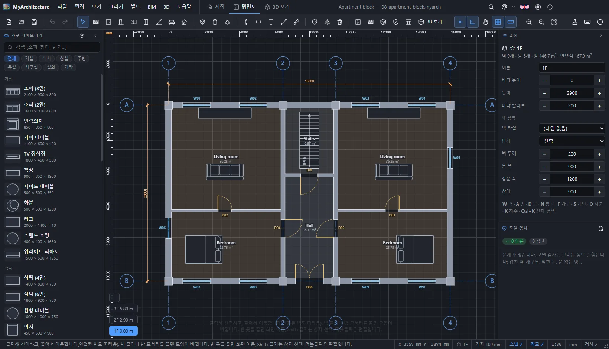
- G(빈 곳 오른쪽 클릭 → 그리드 선)를 누르고 그리드 선의 두 끝을 클릭합니다(500 mm 이상).
- 세로선은
1, 2, 3 …, 가로선은A, B, C …(26개 넘으면A1, A2…)로 비어 있는 다음 번호가 붙고, 양 끝에 버블이 그려집니다. 모든 층에 나타납니다. - 선택하면 레이블을 바꿀 수 있고, 끝 손잡이로 길이를 조정합니다. IFC 로
IfcGrid로 내보내집니다.
3.13 매스 (스케치업식 매스 모델)
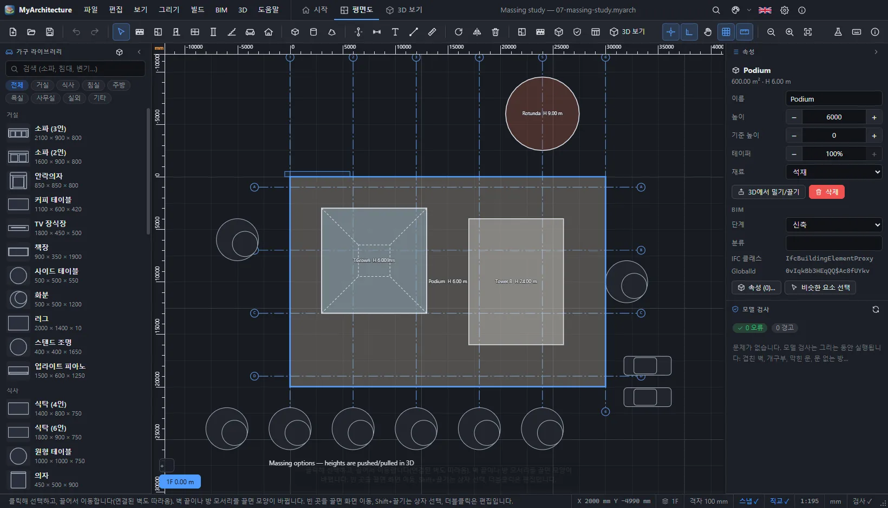
벽·바닥이 없는 덩어리로 볼륨을 검토할 때 씁니다.
| 도구 | 그리는 법 |
|---|---|
| 매스 상자 B | 마주 보는 두 모서리 클릭 |
| 매스 원기둥 U | 중심 클릭, 원 위의 점 클릭(32각형) |
| 매스 다각형 | 모서리를 차례로 클릭, Enter 나 첫 점 클릭으로 돌출 |
새 매스는 높이 3000 mm, 재료 콘크리트, 단계 신축으로 만들어집니다. 선택하면:
| 칸 | 설명 |
|---|---|
| 이름 | 매스 이름 |
| 높이 | 매스 높이 |
| 기준 높이 | 층 바닥에서 띄운 높이(포디움 위 타워 등) |
| 테이퍼 | 윗면 크기 비율 0 ~ 100%. 100% = 수직, 0% = 피라미드/원뿔 |
| 재료 | 벽·지붕 재료 |
3D에서 밀기/끌기 단추는 3D 탭으로 가서 밀기/끌기 도구를 켭니다(5.9절). 매스도 이동·회전·대칭·크기 조정·간격 띄우기·그룹이 됩니다.
3.14 이미지 밑그림과 CAD 도면 따라 그리기
- 스캔한 도면 이미지를 이미지 밑그림으로 가져와(7.4절) 그 위에 벽을 그립니다. 밑그림을 선택하면 X, Y, 폭, 회전, 불투명도 칸과 팁(“M으로 이미지에서 길이를 아는 부분을 잰 다음, 그 길이에 맞도록 폭을 설정하세요.”)이 있습니다.
- DXF/SVG 도면은 CAD 레이어로 들어옵니다(7.4절). 그 위에 W 로 벽을 따라 그리고 레이어를 숨기세요.
- 보기 → 밑그림과 CAD 레이어 표시로 둘 다 한 번에 숨기고 보입니다.
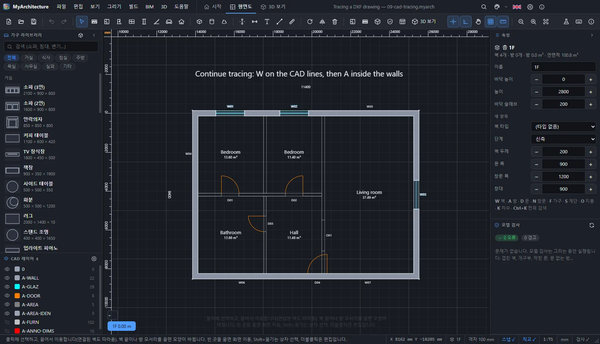
CAD 레이어 목록(왼쪽 패널, 도면이 있거나 레이어가 2개 이상일 때): 눈 아이콘으로 표시/숨기기, 색 견본, 이름, 요소 수. 줄을 누르면 그 레이어가 선 도구로 그릴 레이어가 됩니다. 톱니바퀴(또는 빌드 → CAD 레이어…)는 레이어 창을 엽니다.
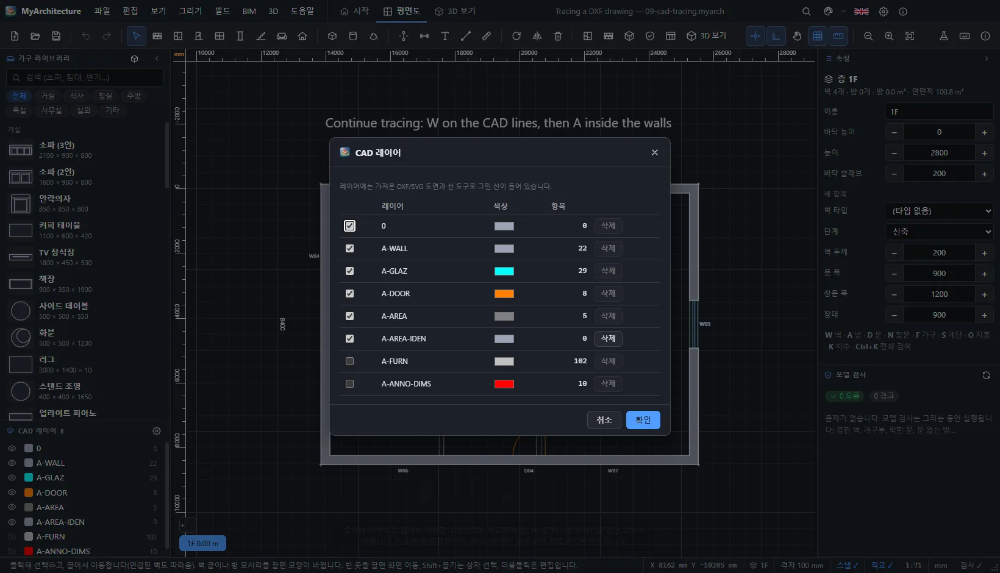
CAD 레이어 창: 레이어마다 표시 체크, 색상, 항목 수, 삭제(요소가 없는 레이어만, 레이어 0 은 지울 수 없음). 10개씩 쪽으로 나뉩니다.
4. 편집
편집 명령은 대부분 평면도 탭에서 동작합니다.
4.1 상자 선택
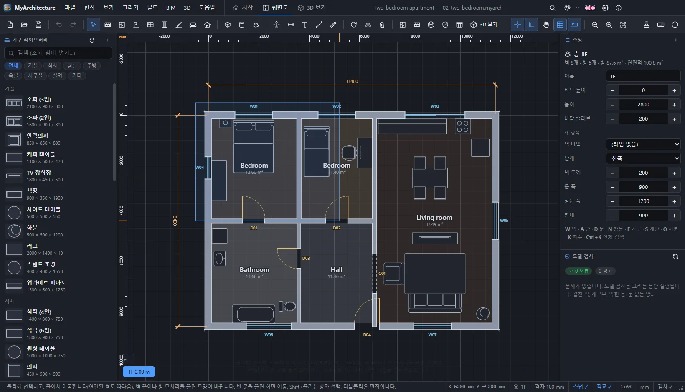
Shift+끌기(또는 Ctrl+끌기, 설정에 따라 그냥 끌기):
- 왼쪽 → 오른쪽(파란 실선 상자): 상자 안에 완전히 들어간 것만(윈도 선택).
- 오른쪽 → 왼쪽(초록 점선 상자): 상자에 걸친 것까지(크로싱 선택).
- 상자 선택은 지금 선택에 더해집니다.
4.2 이동
- 선택한 것을 끌면 이동합니다. 이동 거리는 격자 단위(가구는 반 칸)로 맞춰지고, Shift 를 누르면 가로 또는 세로로만.
- 벽을 옮기면 이어진 벽이 늘어나며 따라오고, 그 벽의 문·창은 벽 안에 남습니다. Alt+끌기는 이어진 벽을 늘리지 않습니다.
- 방향키: 격자 한 칸, Shift+방향키: 열 칸.
- 손잡이 끌기는 이동이 아니라 모양 바꾸기(벽 끝, 방·지붕 꼭짓점, 치수·그리드 끝)입니다.
4.3 복사, 잘라내기, 붙여넣기, 복제, 삭제
| 명령 | 키 | 설명 |
|---|---|---|
| 복사 | Ctrl+C | “n개 항목을 복사했습니다” |
| 잘라내기 | Ctrl+X | 복사 후 삭제 |
| 붙여넣기 | Ctrl+V | 커서 위치(격자에 맞춤)에 붙여 넣음. 커서가 도면 밖이면 원래 자리에서 1 m 비켜서. 지금 층에 들어갑니다(다른 층으로 복사할 때 유용) |
| 복제 | Ctrl+D | 1 m 오른쪽 아래에 사본 |
| 삭제 | Del 또는 Backspace | 벽을 지우면 그 벽의 문·창도 지워짐 |
빈 곳 오른쪽 클릭 메뉴의 붙여넣기는 오른쪽 클릭한 자리에 붙여 넣습니다.
4.4 회전과 대칭
| 명령 | 키 | 설명 |
|---|---|---|
| 90° 회전 | R | 선택의 중심을 기준으로 90° |
| 15° 회전 | Shift+R | 반대 방향으로 15° |
| 좌우 대칭 / 문 뒤집기 | X | 선택에 문·창이 있으면 문의 여는 쪽만 뒤집기, 아니면 좌우 대칭 |
| 상하 대칭 | Y | 위아래 대칭 |
| 경첩 바꾸기 | H | 선택한 문의 경첩 |
4.5 크기 조정
편집 → 크기 조정…(여러 개 선택 시 오른쪽 패널 크기 조정… 단추): “배율 (예: 1.5 또는 50%)”을 입력하면 선택을 그 중심 기준으로 키우거나 줄입니다. 50% 처럼 퍼센트도 됩니다. 가구는 높이까지 바뀝니다.
4.6 간격 띄우기
편집 → 간격 띄우기…: “간격 띄우기 거리(mm, 음수 = 안쪽)”를 입력하면 선택한 방, 매스, 지붕, 닫힌 선의 평행한 사본을 만듭니다. 양수는 바깥, 음수는 안쪽입니다. 다른 요소에는 쓸 수 없습니다(“간격을 띄울 방, 매스, 지붕 또는 닫힌 선을 선택하세요.”).
4.7 그룹
- 그룹 Ctrl+G: 두 개 이상 골라 묶습니다(문·창과 그리드 선은 그룹에 들어가지 않음). 그 뒤 아무 항목이나 클릭하면 그룹 전체가 선택되고 함께 움직입니다. Alt+클릭은 하나만.
- 그룹 해제 Ctrl+Shift+G.
- 그룹 요소를 선택하면 오른쪽 패널에 “그룹의 일부입니다 (n개 항목)…”와 그룹 해제 단추가 나옵니다.
4.8 여러 개 선택했을 때
오른쪽 패널에 “항목 n개 선택됨”, 종류별 개수와 회전 · 대칭 · 복제 · 삭제 · 그룹 · 크기 조정… 단추가 나옵니다. 벽만 골랐다면 두께와 재료를 한꺼번에 바꿀 수 있습니다.
4.9 비슷한 요소 선택
BIM → 비슷한 요소 선택(오른쪽 클릭 메뉴, BIM 칸 단추): 지금 층에서 처음 고른 요소와 같은 것을 모두 고릅니다.
- 벽: 같은 벽 타입이면서 같은 두께
- 가구: 같은 종류
- 문·창: 같은 종류, 같은 폭
- 그 밖: 같은 종류 전부(그리드 선은 전체)
4.10 속성 창
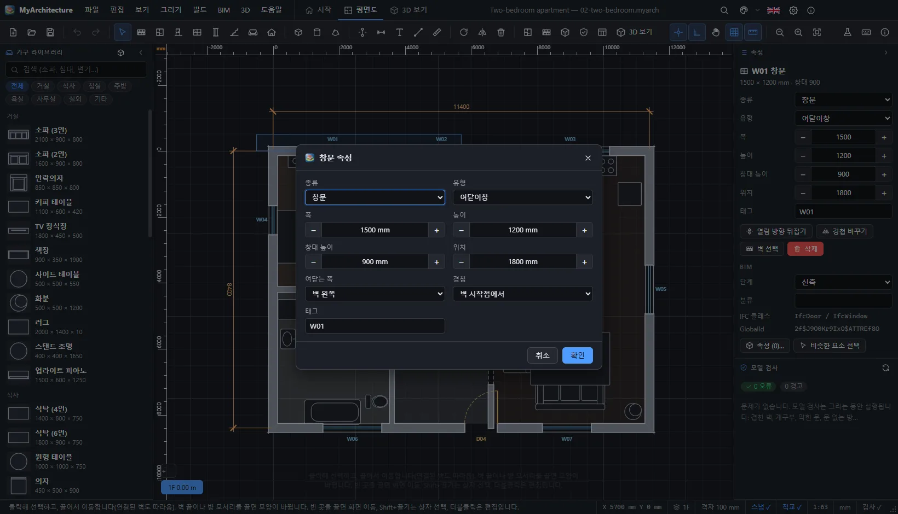
선택 도구에서 요소를 더블클릭하거나 하나를 고르고 E(편집 → 속성…)를 누르면 속성 창이 열립니다. 창 안에서 바꾼 것은 확인을 누를 때 한 번에(되돌리기 한 단계로) 적용됩니다. 아무것도 고르지 않고 속성…을 실행하면 프로젝트 속성이 열립니다.
| 요소 | 창 이름 | 항목 |
|---|---|---|
| 벽 | 벽 속성 | 길이, 두께, 높이, 층 높이와 같게, 재료 |
| 문·창 | 문 속성 / 창문 속성 | 종류, 유형, 폭, 높이, 창대 높이, 위치, 여닫는 쪽, 경첩, 태그 |
| 방 | 방 속성 | 이름(목록), 바닥, 면적(읽기 전용), 텍스트 크기, 면적 표시 |
| 가구 | (가구 이름) | 이름, 종류, 폭, 깊이, 높이, 바닥에서 높이, 회전, 색상 |
| 계단 | 계단 속성 | 단 수, 폭, 길이, 회전, 재료 |
| 지붕 | 지붕 속성 | 모양, 경사, 처마 내밀기, 두께, 재료 |
| 기둥 | 기둥 속성 | 모양, 폭, 깊이, 회전 |
| 텍스트 | 텍스트 | 글자, 크기, 회전 |
| 그 밖(매스, 치수, 그리드, 선, 밑그림) | — | “오른쪽에서 편집하세요.” — 오른쪽 패널에서 고칩니다 |
4.11 오른쪽 클릭 메뉴 (평면)
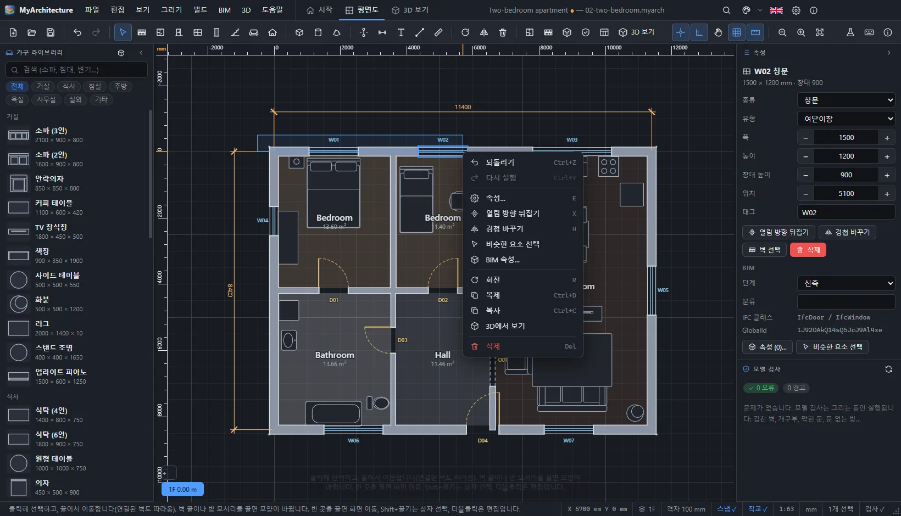
선택 도구에서 마우스 오른쪽 버튼을 움직이지 않고 누르면 메뉴가 열립니다. (그리는 중이면 오른쪽 클릭은 그리기를 끝내고, 다른 도구일 때는 선택 도구로 돌아갑니다.)
요소 위(그 요소가 선택됨):
- 되돌리기 · 다시 실행
- 속성… (E)
- 벽이면: 여기에 문 추가 · 여기에 창문 추가 · 여기서 벽 나누기 · 일직선 벽 합치기
- 문·창이면: 열림 방향 뒤집기 (X) · 경첩 바꾸기 (H)
- 비슷한 요소 선택 · BIM 속성…
- 회전 (R) · 복제 (Ctrl+D) · 복사 (Ctrl+C) · 3D에서 보기
- 삭제 (Del)
빈 곳: 되돌리기 · 다시 실행 / 붙여넣기 · 방 감지 · 자동 치수 · 모두 선택 · 그리드 선 / 화면에 맞추기.
층 탭: 3.10절. 3D: 5.14절.
5. 3D 보기
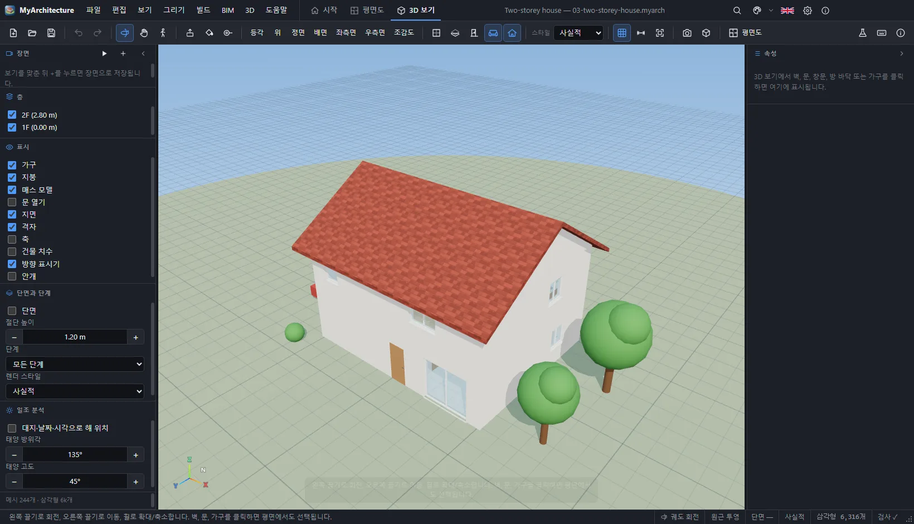
3D 보기 탭(F3, F4 도 같음)은 평면에서 그린 것을 바로 3D 건물로 보여 줍니다. 평면을 고치면 3D 도 곧 다시 만들어집니다. 처음 열 때 등각 보기로 건물 전체를 맞춥니다.
5.1 3D 도구 모음
| 묶음 | 단추 |
|---|---|
| 탐색 | 궤도 회전 · 이동 (P) · 걷기 (V) |
| 도구 | 밀기/끌기 · 페인트 통 · 줄자 |
| 시점 | 등각 · 위 · 정면 · 배면 · 좌측면 · 우측면 · 조감도 (키 1 ~ 7) |
| 표시 | 직교 투영 (O) · 현재 층에서 단면 (X) · 문 열기 · 가구 · 지붕 |
| 스타일 | 렌더 스타일 목록(사실적 / 흰색 모형 / 선 그림 / X-레이) |
| 보조 | 격자 (G) · 건물 치수 · 화면에 맞추기 |
| 출력 | 3D 이미지 저장 (PNG)… · 3D 모델 내보내기… |
| 이동 | 평면도 |
5.2 탐색 (궤도 회전 · 이동)
| 동작 | 궤도 회전(기본) | 이동 모드 (P) |
|---|---|---|
| 왼쪽 끌기 | 회전 | 화면 이동 |
| 오른쪽 끌기 | 화면 이동 | 회전 |
| 휠 / 가운데 끌기 | 확대·축소 | 확대·축소 |
- 방향키: 회전(한 번에 7.5°), Shift+방향키: 화면 이동.
- 모델을 더블클릭하면 그 점을 중심으로 가까이 다가갑니다.
- Home(화면에 맞추기)은 지금 방향 그대로 건물 전체를 맞춥니다.
- 회전 속도와 시야각은 설정 → 3D 보기.
- 오른쪽 위 구석의 방향 표시기(X 빨강, Y 파랑, Z 초록)는 지금 방향을 보여 줍니다(표시 옵션 방향 표시기).
5.3 시점
1 등각 · 2 위 · 3 정면 · 4 배면 · 5 좌측면 · 6 우측면 · 7 조감도. 카메라가 부드럽게 날아가 건물 전체를 맞춥니다. 3D 메뉴에는 등각 보기, 평면 보기(위), 정면 입면이 있습니다.
5.4 걷기 (1인칭)
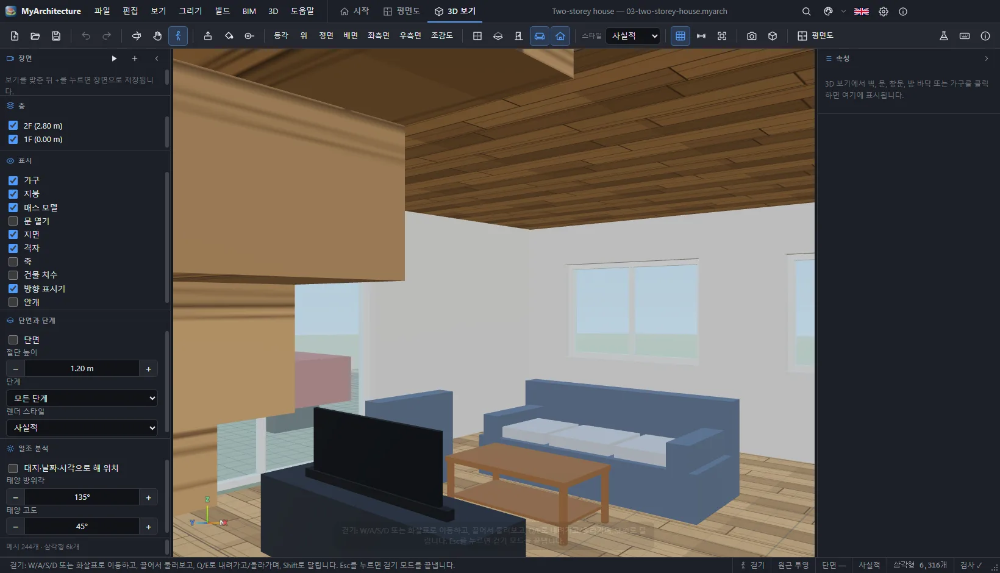
V(또는 걷기 단추, 3D → 걷기 (1인칭), 상태 표시줄의 탐색 칸)를 누르면 보이는 가장 낮은 층 바닥에서 눈높이 1.6 m 로 섭니다.
| 키·동작 | 하는 일 |
|---|---|
| W / ↑ | 앞으로 |
| S / ↓ | 뒤로 |
| A / D | 왼쪽 / 오른쪽으로 옆걸음 |
| ← / → | 왼쪽 / 오른쪽으로 돌기 |
| E / Page Up | 올라가기 |
| Q / Page Down | 내려가기 |
| Shift 누른 채 | 달리기(약 3배 빠르게) |
| 끌기 | 둘러보기 |
| 휠 | 앞뒤로 한 걸음(0.5 m) |
| Esc 또는 V | 걷기 끝내기 |
걷기는 원근 투영에서만 됩니다(평행 투영이었다면 자동으로 원근으로). 시점 단추를 누르거나 다른 탭으로 가면 걷기가 끝납니다.
5.5 평행 투영과 입면
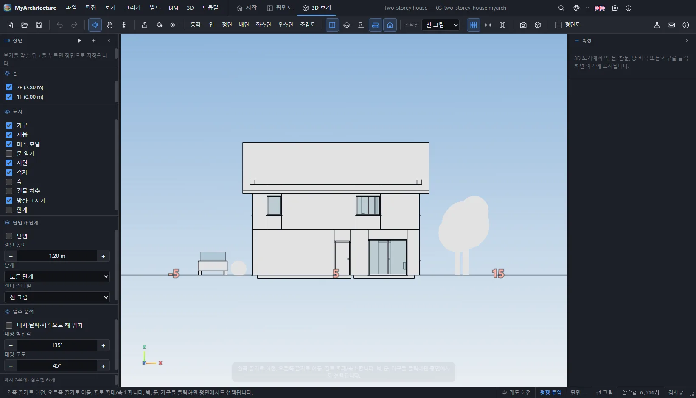
- O(직교 투영)는 원근 없이 평행하게 봅니다. 상태 표시줄에는 “평행 투영 / 원근 투영”으로 표시됩니다.
- 3D → 정면 입면은 평행 투영 + 선 그림 스타일 + 정면 시점을 한 번에 켜서 입면도처럼 보여 줍니다. 그 상태에서 4 ~ 6 으로 다른 입면을 봅니다.
5.6 표현 스타일
도구 모음 스타일 목록이나 왼쪽 단면과 단계 패널의 렌더 스타일에서 고릅니다.
| 스타일 | 모습 |
|---|---|
| 사실적 | 재료 색·무늬, 해와 그림자 |
| 흰색 모형 | 모형처럼 모두 흰색, 그림자 |
| 선 그림 | 흰 면 + 검은 모서리선(입면도·스케치 느낌), 그림자 없음 |
| X-레이 | 반투명 푸른 면으로 속을 들여다봄 |
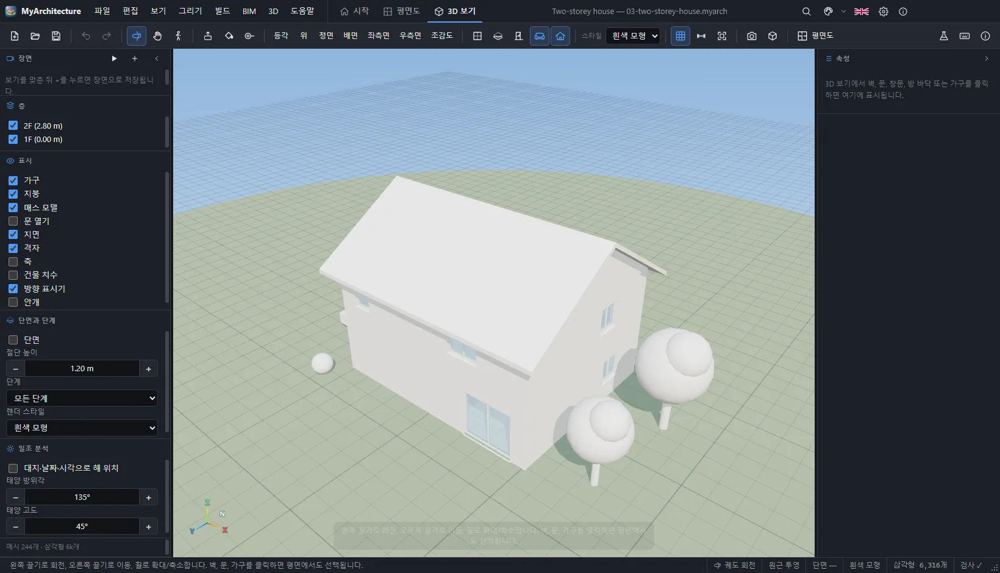
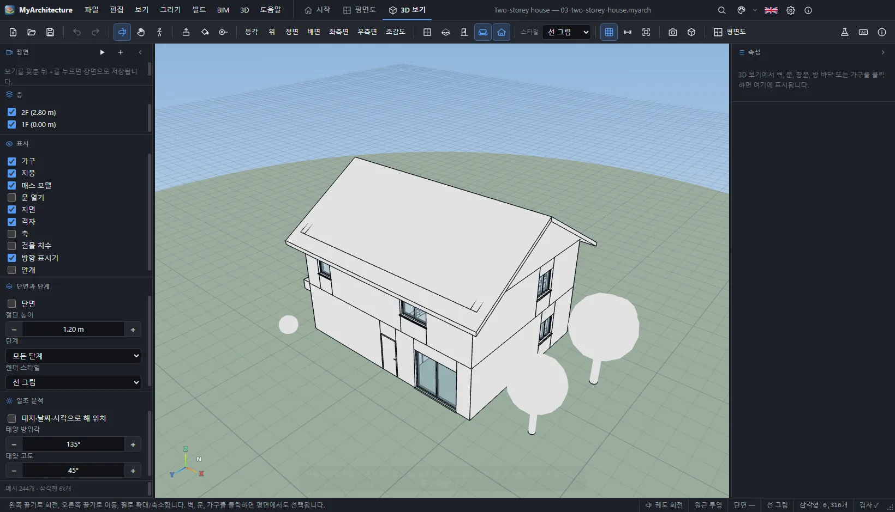
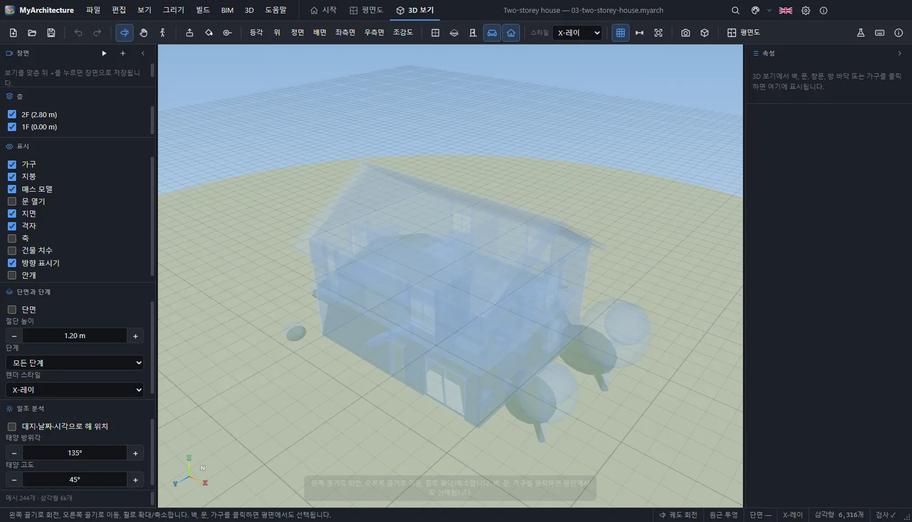
5.7 단면
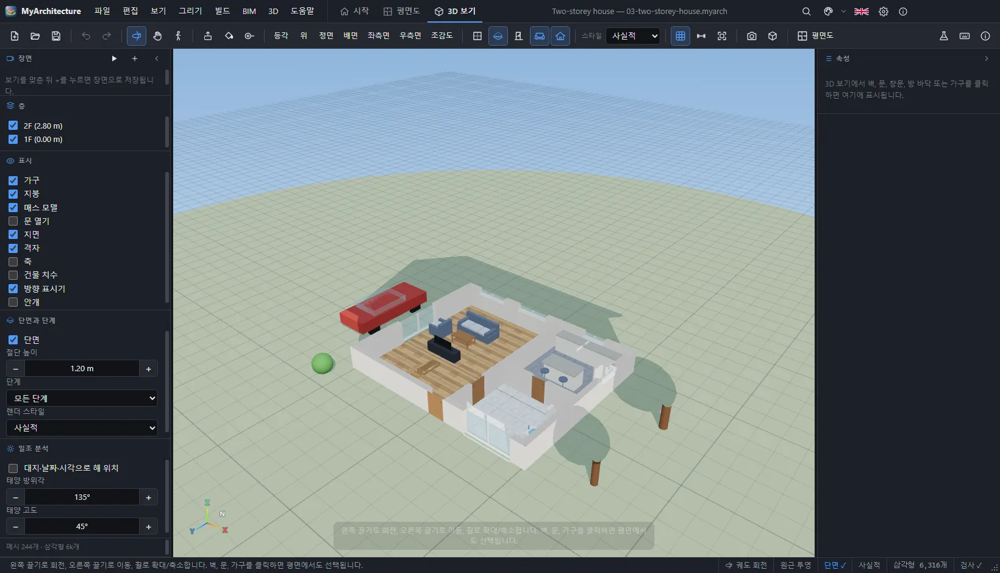
- X(단면 단추, 3D → 현재 층에서 단면, 상태 표시줄 단면 칸)는 평면에서 편집 중인 층의 바닥 + 1.2 m 높이에서 건물을 수평으로 잘라 위를 걷어 냅니다. 3D 평면도처럼 내부가 보입니다. 다시 누르면 꺼집니다.
- 왼쪽 단면과 단계 패널: 단면 체크, 절단 높이 스테퍼(0.1 m 단위)로 높이를 바꿉니다.
- 잘려 나간 부분은 클릭해도 선택되지 않습니다.
5.8 왼쪽 패널 (3D 보기 옵션)
위에서부터:
- 페인트 통 팔레트(페인트 통 도구가 켜져 있을 때만, 5.10절)
- 장면(5.13절)
- 층: 층마다 체크(위층부터). 끄면 그 층이 3D 에서 숨습니다(내보내기에서도 빠짐).
- 표시: 가구 · 지붕 · 매스 모델 · 문 열기 · 지면 · 격자 · 축 · 건물 치수 · 방향 표시기 · 안개
- 단면과 단계: 단면, 절단 높이, 단계(모든 단계 / 새 설계 (철거 없음) / 기존(공사 전)), 렌더 스타일
- 일조 분석(5.12절)
- 맨 아래: 메시 수 · 삼각형 수
표시 항목 설명:
| 항목 | 설명 |
|---|---|
| 문 열기 | 문짝을 열린 상태로(걸어 다닐 때 편리) |
| 지면 | 건물 아래 바닥면 |
| 격자 (G) | 5.8.1 참고 |
| 축 | 원점에서 X(빨강)·Y(파랑)·Z(초록) 축 |
| 건물 치수 | 건물 전체의 W(폭)·D(깊이)·H(높이)를 노란 치수로 |
| 안개 | 멀수록 흐려지는 공기 원근(3D 메뉴 안개도 같음) |
5.8.1 3D 격자
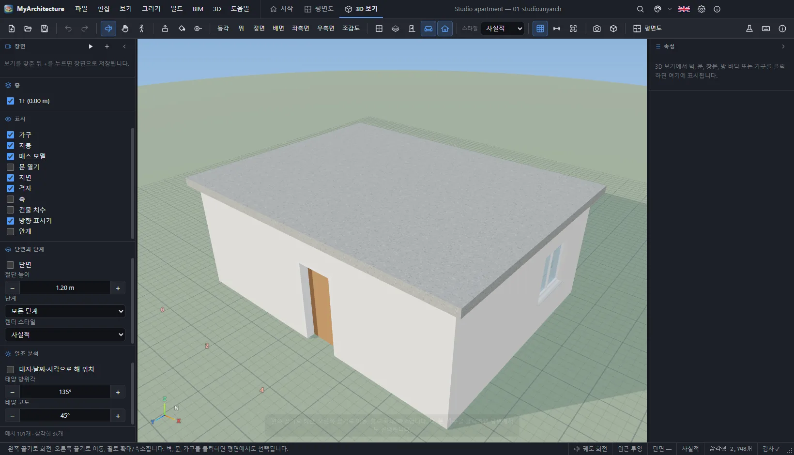
3D 격자는 평면의 격자처럼 그려집니다.
- 가는 선 한 칸, 5칸마다 또렷한 선(5 × 5 블록).
- 확대·축소하면 칸 크기가 ×5 / ÷5 로 바뀝니다(… 0.2 m · 1 m · 5 m · 25 m …). 그래서 어떤 거리에서 보아도 화면에서 고른 간격을 유지하고, 또렷한 선은 너무 진하지 않은 1.5 px 로, 화면 기준으로 일정합니다.
- 격자는 지금 보는 곳(걷기에서는 서 있는 곳)을 중심으로 펼쳐지고, 또렷한 선을 따라 거리 눈금(m 또는 ft — 설정 → 3D 보기 → 3D 측정 단위)이 붙습니다.
- G, 도구 모음 격자 단추, 표시 패널로 켜고 끕니다. 3D 를 처음 열 때 켜져 있을지는 설정 → 3D 보기 → 시작 시 표시: 축척 표시 격자.
5.9 밀기/끌기
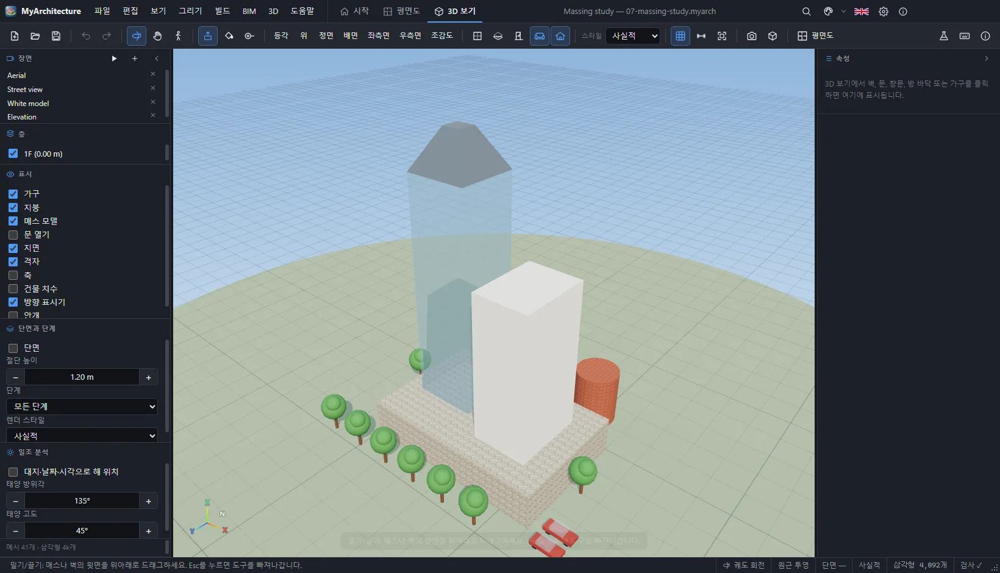
밀기/끌기(도구 모음, 3D 메뉴, 매스의 3D에서 밀기/끌기 단추)를 켜고 매스나 벽의 윗면을 위아래로 끌면 높이가 50 mm 단위로 바뀝니다(매스 최소 100 mm, 벽 최소 300 mm). 끄는 동안 힌트 칸에 높이: … m 가 보입니다. 한 번 끌기가 되돌리기 한 단계입니다. 같은 단추를 다시 누르거나 Esc 로 도구를 끝냅니다.
5.10 페인트 통
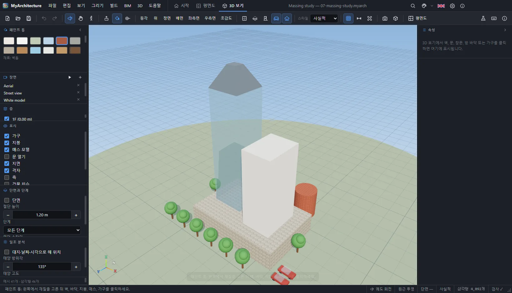
페인트 통을 켜면 왼쪽에 재료 견본(벽·바닥·지붕 재료 전부)이 나옵니다. 견본을 고르고(“재료: …”) 모델을 클릭하면:
| 클릭한 것 | 바뀌는 것 |
|---|---|
| 벽, 지붕, 매스, 기둥, 계단 | 재료 |
| 방 바닥 | 바닥 재료 |
| 가구 | 그 재료의 색 |
| 문·창 | 바뀌지 않음 |
5.11 줄자
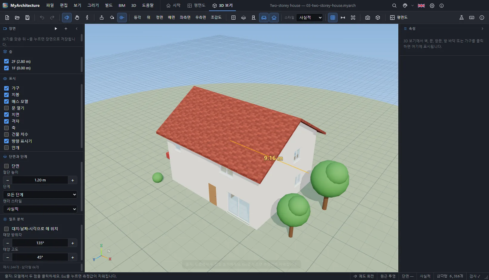
줄자를 켜고 모델 위 두 점을 클릭하면 두 점 사이에 노란 선과 거리 글자가 남고 “거리: … m” 알림이 뜹니다. 여러 개를 잴 수 있고, Esc(도구 끄기) 때 지워집니다.
5.12 일조 분석
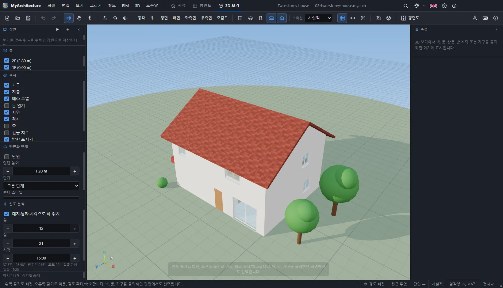
왼쪽 일조 분석 패널:
- 대지·날짜·시각으로 해 위치를 끄면: 태양 방위각(15° 단위)과 태양 고도(5° 단위)를 직접 정합니다(기본 135°, 45°).
- 켜면: 월, 일, 시각(30분 단위)으로 실제 해 위치를 계산합니다. 아래에 위도·경도, 방위각, 고도, 일출·일몰 시각이 표시되고, 해가 지평선 아래면 고도가
<0으로 나옵니다. 대지 위치… 단추는 프로젝트 속성을 엽니다(위도, 경도, 시간대, 북쪽 방향 — 6.8절). - 방위각은 북쪽에서 시계 방향이며, 프로젝트의 북쪽 회전이 반영됩니다.
- 그림자는 설정 → 3D 보기 → 3D 그림자: 태양 그림자로 켜고 끕니다(선 그림 스타일에서는 그림자 없음).
5.13 장면
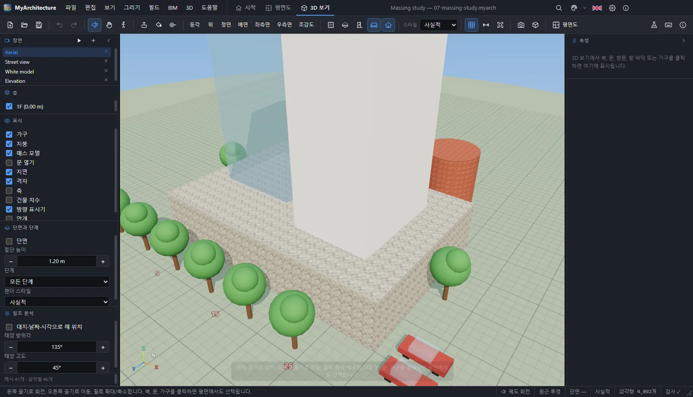
- 장면 패널의 +(또는 3D → 장면 추가, 3D 오른쪽 클릭 메뉴)는 지금 카메라·투영·표현 스타일·단면 높이·단계 보기를 “장면 1, 장면 2…”로 프로젝트에 저장합니다.
- 장면 이름을 누르면 그 시점으로 부드럽게 날아갑니다. × 로 지웁니다.
- ▶(장면 재생, 3D → 장면 애니메이션 재생)은 장면을 차례로 돌며 계속 재생합니다(장면마다 약 2.5초). 다시 누르면(■ 정지) 멈춥니다. 장면이 없으면 “먼저 장면을 추가하세요…”.
5.14 3D 에서 선택과 오른쪽 클릭
- 벽, 문, 창, 방 바닥, 가구 등을 클릭하면 파랗게 강조되고, 평면에서도 선택됩니다. 오른쪽 패널에 이름, 층, 클릭한 높이와 평면에서 보기 / 속성… 단추가 나옵니다.
- 평면의 요소에서 3D에서 보기(오른쪽 클릭, 가구 속성 단추)를 누르면 3D 탭에서 강조됩니다.
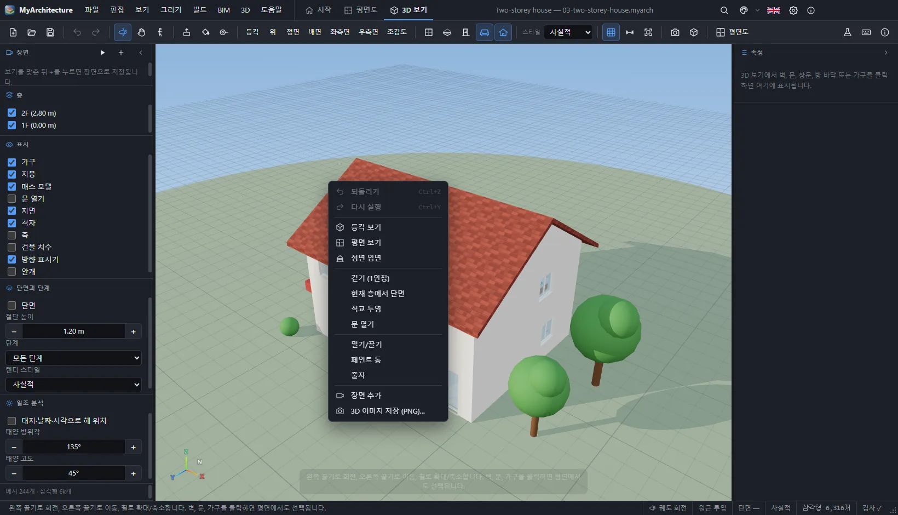
오른쪽 버튼을 움직이지 않고 떼면 메뉴: (요소를 클릭한 상태면 맨 위에 평면에서 보기) · 되돌리기 · 다시 실행 / 등각 보기 · 평면 보기 · 정면 입면 / 걷기 (1인칭) · 현재 층에서 단면 · 직교 투영 · 문 열기 / 밀기/끌기 · 페인트 통 · 줄자 / 장면 추가 · 3D 이미지 저장 (PNG)…. 오른쪽 끌기는 여전히 화면 이동입니다.
5.15 이미지 저장과 3D 내보내기
- 3D 이미지 저장 (PNG)…: 지금 3D 화면을 그대로
제목-3d.png로 저장합니다. - 3D 모델 내보내기…: 7.5절.
6. BIM
평면의 요소(벽, 문·창, 방, 기둥, 계단, 가구, 지붕, 매스, 그리드)는 BIM 정보를 함께 가집니다. 요소를 고르면 오른쪽 패널 아래 BIM 칸에 나옵니다.
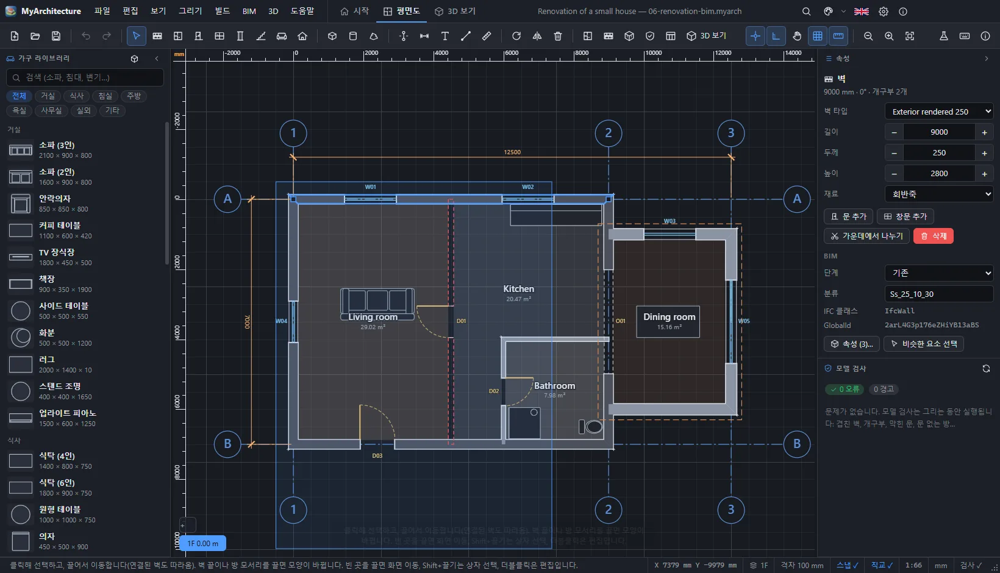
| 칸 | 설명 |
|---|---|
| 단계 | 기존 / 신축 / 철거 (그리드에는 없음) |
| 분류 | 분류 코드(예: Uniclass 2015 코드). 분류 체계 이름은 프로젝트 속성에서 |
| IFC 클래스 | 내보낼 IFC 클래스(읽기 전용) — 벽 IfcWall, 문·창 IfcDoor / IfcWindow, 방 IfcSpace, 기둥 IfcColumn, 계단 IfcStair, 가구 IfcFurniture, 지붕 IfcRoof, 그리드 IfcGrid, 매스 IfcBuildingElementProxy |
| GlobalId | IFC GlobalId(22자). 누르면 클립보드에 복사 |
| 속성 (n)… | 사용자 속성 창(6.4절) |
| 비슷한 요소 선택 | 4.9절 |
6.1 벽 타입
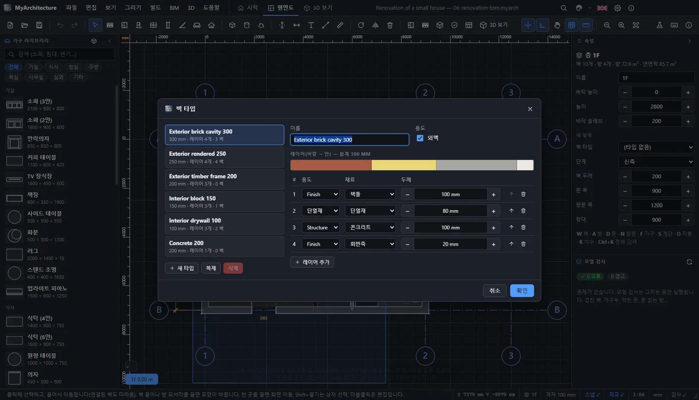
BIM → 벽 타입…(도구 모음 벽 타입 단추):
- 왼쪽 목록: 타입마다 전체 두께 · 레이어 수 · 그 타입을 쓰는 벽 수. 새 타입, 복제, 삭제(타입이 2개 이상이고 쓰는 벽이 없을 때만).
- 오른쪽: 이름, 용도: 외벽 체크, 레이어 단면 그림(바깥이 왼쪽), 레이어 표 — 용도(마감 / 단열재 / 구조 / 공기층), 재료(벽 재료 + 단열재·공기층), 두께(5 mm 단위 스테퍼), 위로 이동, 삭제. 레이어 추가.
- “레이어(바깥 → 안) — 합계 … mm”. 확인을 누르면 그 타입을 쓰는 모든 벽의 두께가 새 합계로 바뀝니다.
새 프로젝트에 들어 있는 벽 타입:
| 이름 | 레이어 (바깥 → 안) | 합계 |
|---|---|---|
| Exterior brick cavity 300 | 벽돌 100 · 단열재 80 · 콘크리트 100 · 회반죽 20 | 300 |
| Exterior rendered 250 | 회반죽 20 · 단열재 60 · 콘크리트 150 · 회반죽 20 | 250 |
| Exterior timber frame 200 | 목재 외장재 25 · 단열재 150 · 회반죽 25 | 200 |
| Interior block 150 | 회반죽 15 · 콘크리트 120 · 회반죽 15 | 150 |
| Interior drywall 100 | 흰색 페인트 13 · 단열재 74 · 흰색 페인트 13 | 100 |
| Concrete 200 | 콘크리트 200 | 200 |
벽에 타입 지정: 벽을 고르고 오른쪽 패널 벽 타입에서 선택(여러 벽은 고른 뒤 비슷한 요소 선택 등으로). 평면에는 레이어 경계선이 그려집니다. 새로 그릴 벽의 타입은 아무것도 고르지 않았을 때 오른쪽 패널 새 항목 → 벽 타입. 벽의 두께를 직접 바꾸면 타입이 풀립니다.
6.2 단계 (리모델링)
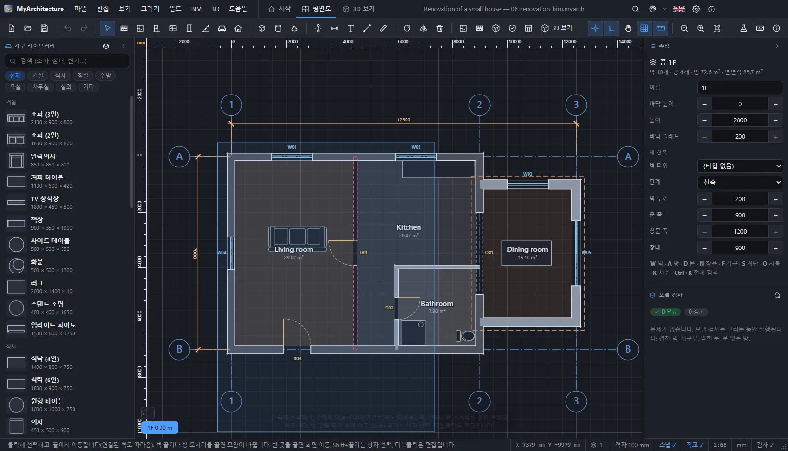
- 요소마다 단계: 기존(옅게), 신축(보통), 철거(빨간 점선 윤곽).
- 새로 그릴 요소의 단계: 오른쪽 패널 새 항목 → 단계.
- 보기 → 단계: 모두 보기 / 단계: 새 설계 / 단계: 기존 건물(3D 왼쪽 패널 단계도 같음):
| 단계 보기 | 보이는 것 |
|---|---|
| 모든 단계 | 전부 |
| 새 설계 (철거 없음) | 기존 + 신축 (공사 후 모습) |
| 기존(공사 전) | 기존 + 철거 (공사 전 모습) |
- 공사비에는 신축만 들어갑니다(기존은 0, 철거는 제외).
6.3 분류와 IFC
- 분류 칸에 분류 코드를 적고, 프로젝트 속성 → 분류 체계(기본
Uniclass 2015)에 체계 이름을 적으면 IFC 의 분류 참조로 나갑니다. - 단계, 벽 타입(레이어 재료), 그리드, 사용자 속성은 모두 IFC 내보내기에 포함됩니다(7.5절).
6.4 사용자 속성 (BIM 속성)
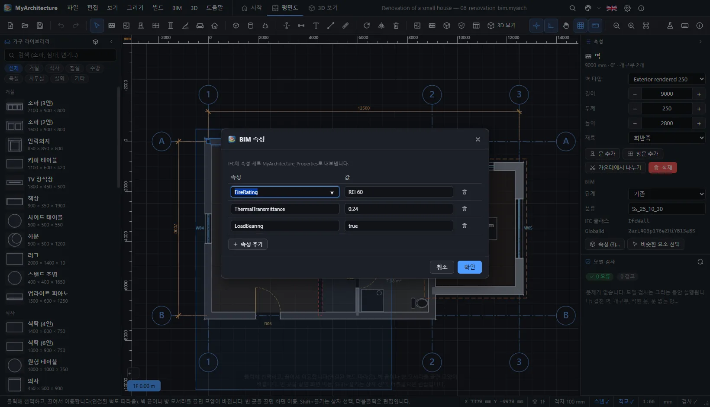
BIM → 선택 요소의 BIM 속성…(오른쪽 클릭 BIM 속성…, BIM 칸 속성 (n)…):
- 속성 / 값 표. 속성 추가로 줄을 더하고 휴지통으로 지웁니다. 속성 이름 칸은
FireRating, AcousticRating, ThermalTransmittance, LoadBearing, Manufacturer, Model, Cost, Mark, Comments를 제안합니다. - 값이 숫자면 숫자로,
true/false면 참/거짓으로 저장됩니다. - 여러 요소를 고르면 “속성이 선택한 요소 n개 모두에 기록됩니다.” 하나면 “IFC에 속성 세트 MyArchitecture_Properties로 내보냅니다.”
- 텍스트·치수·CAD 선·밑그림에는 붙일 수 없습니다. 아무것도 고르지 않으면 “먼저 요소를 하나 이상 선택하세요.”
- 가구에
price속성을 붙이면 공사비의 가구 금액으로 쓰입니다.
6.5 일람표 (집계와 수량)
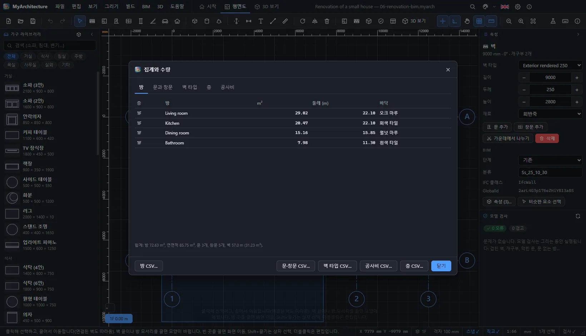
빌드 → 집계와 수량…(도구 모음, 파일 → 내보내기 ▸ 집계표 내보내기(CSV)… 도 같은 창. BIM → 공사비… 는 같은 창을 공사비 탭으로 엽니다):
| 탭 | 열 |
|---|---|
| 방 | 층, 방, m², 둘레 (m), 바닥 |
| 문과 창문 | 태그, 종류, 유형, 층, 폭, 높이, 창대 높이 |
| 벽 타입 | 벽 타입(타입 없는 벽은 두께별), 두께, 레이어, 벽 수, 길이(m), 벽 면적 (m²) |
| 층 | 층, 바닥 높이, 벽, 벽 길이 (m), 벽 면적 (m², 개구부 뺀 한 면), 방, 방 면적 (m²), 총면적 (m², 벽 바깥 기준), 문, 창문 |
| 공사비 | 6.6절 |
긴 표는 12줄씩 쪽으로 나뉩니다. 아래에 합계(방 면적, 연면적, 문·창 수, 벽 길이와 부피)가 나옵니다.
아래 단추 방 CSV… · 문·창문 CSV… · 벽 타입 CSV… · 공사비 CSV… · 층 CSV… 는 그 표를 제목-rooms.csv 처럼 저장합니다. CSV 는 UTF-8(BOM 포함)이라 Excel 에서 한글이 깨지지 않습니다.
6.6 공사비
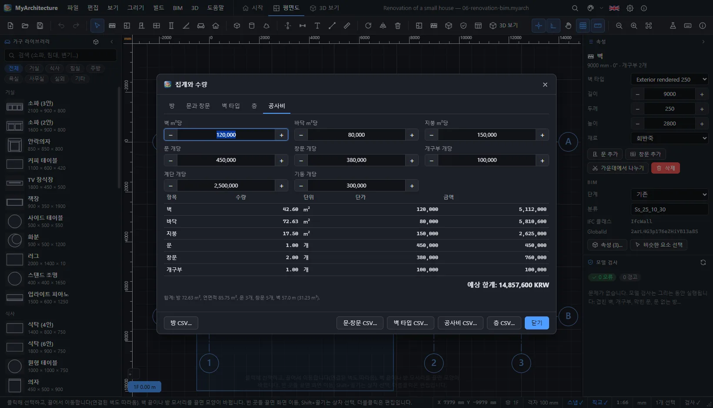
공사비 탭 위쪽의 단가(스테퍼, 10,000 단위, 직접 입력 가능)를 바꾸면 표가 바로 다시 계산되고, 창을 닫을 때 프로젝트에 저장됩니다(되돌리기 “단가” 한 단계).
| 단가 칸 | 표의 항목 | 수량 | 기본 단가 (KRW) |
|---|---|---|---|
| 벽 m²당 | 벽 | 신축 벽의 한 면 면적(개구부 제외), m² | 120,000 |
| 바닥 m²당 | 바닥 | 신축 방 면적, m² | 80,000 |
| 지붕 m²당 | 지붕 | 신축 지붕의 평면 면적, m² | 150,000 |
| 문 개당 | 문 | 신축 문 수, 개 | 450,000 |
| 창문 개당 | 창문 | 신축 창 수, 개 | 380,000 |
| 개구부 개당 | 개구부 | 신축 개구부 수, 개 | 100,000 |
| 계단 개당 | 계단 | 신축 계단 수, 개 | 2,500,000 |
| 기둥 개당 | 기둥 | 신축 기둥 수, 개 | 300,000 |
| — | 가구 | 신축 가구, 개 | 가구마다 price 속성 합계 |
열: 항목, 수량, 단위, 단가, 금액. 맨 아래 “예상 합계: … KRW”. 수량이 0 인 항목은 표에서 빠집니다.
6.7 모델 검사
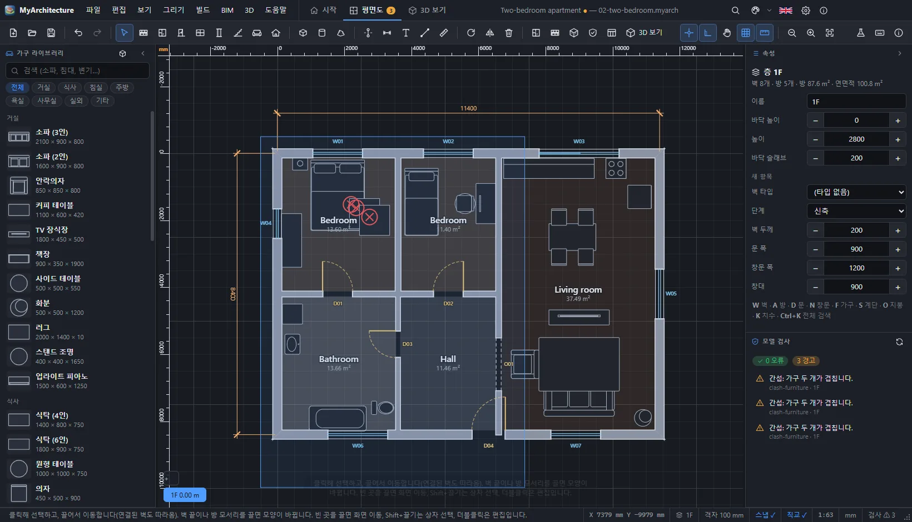
모델 검사는 회로 설계의 ERC/DRC 에 해당하는 건축 검사입니다.
- 기본으로 그리는 동안 계속 실행됩니다(설정 → 평면도 → 그리는 동안 모델 검사 실행).
- F5(빌드 → 모델 검사, 도구 모음, 상태 표시줄 검사 칸)는 지금 검사하고 “모델 검사: 오류 n개, 경고 n개” 또는 “모델 검사 통과 — 문제가 없습니다.”를 알리며 오른쪽 패널을 엽니다.
- 오른쪽 패널 아래 모델 검사 목록: 오류·경고 개수 알약, 항목마다 메시지와
코드 · 층. 항목을 누르면 그 층으로 가서 문제 위치를 확대하고 주황 원으로 깜박이며 관련 요소를 선택합니다. ↻ 단추는 다시 검사. - 문제 위치는 평면에도 표시됩니다. 평면도 탭과 접힌 오른쪽 패널에 개수 배지가 붙습니다.
검사 규칙 전체(메시지는 화면에 나오는 그대로)는 12.2절에 있습니다.
6.8 프로젝트 속성과 대지
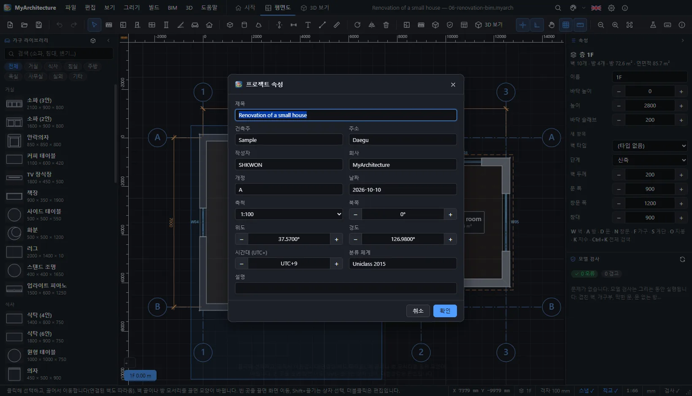
파일 → 프로젝트 속성…(BIM → 대지 위치 (일조 분석)… 도 같은 창):
| 항목 | 쓰임 |
|---|---|
| 제목 | 문서 제목, 파일 이름 제안, 도면 표제란, IFC 프로젝트 이름 |
| 건축주, 주소 | 표제란 작은 글씨 |
| 작성자, 회사 | 표제란 “작성자”, IFC 작성자·조직 |
| 개정, 날짜 | 표제란 |
| 도면 축척 | 1:20 / 1:50 / 1:100 / 1:200 / 1:500 — 인쇄 기본 축척, SVG 내보내기 크기 |
| 북쪽 | 북쪽 방향 회전(−180° ~ 180°, 5° 단위) — 방위표와 해 방향 |
| 위도, 경도 | 일조 분석(기본 서울 37.57°, 126.98°) |
| 시간대 (UTC+) | 일조 분석 시각(기본 UTC+9, 0.5 단위) |
| 분류 체계 | IFC 분류 참조 이름(기본 Uniclass 2015) |
| 설명 | 메모 |
7. 파일
7.1 새로 만들기, 열기, 저장
| 명령 | 키 | 설명 |
|---|---|---|
| 새 프로젝트 | Ctrl+N | 빈 평면(층 1F, 층고 2800, mm 단위). 평면도 탭으로 가며 “새 프로젝트입니다. W를 눌러 벽을 그리세요.” |
| 열기… | Ctrl+O | .myarch(그리고 가져올 수 있는 모든 형식 — 형식에 맞는 가져오기로 넘어감) |
| 저장 | Ctrl+S | 이미 경로가 있으면 묻지 않고 덮어씀 |
| 다른 이름으로 저장… | Ctrl+Shift+S | 새 파일 이름(기본: 제목.myarch) |
| 끝내기 | Alt+F4 | 데스크톱판만 |
- 저장하지 않은 변경이 있으면 새로 만들기·열기·예제·튜토리얼·끝내기 전에 “닫기 전에 "…"의 변경 내용을 저장할까요?” — 취소 / 저장 안 함 / 저장.
- 파일(프로젝트, DXF, 3D 모델, 이미지 …)을 창으로 끌어다 놓아도 열리거나 가져와집니다. 평면도 탭에 놓은 3D 모델과 이미지는 놓은 자리에 들어갑니다.
.myarch는 JSON 텍스트 파일로, 프로젝트의 모든 것(층, 요소, 벽 타입, 단가, 장면, 가져온 3D 모델과 밑그림 이미지)을 담습니다.
7.2 자동 저장과 복구
- 설정 → 일반 → 자동 저장: 복구용 사본 보관(기본 켬), 자동 저장 간격(10초 ~ 10분, 기본 30초).
- 저장하지 않은 변경이 있을 때만 복구용 사본을 씁니다. 정상적으로 저장하면 지워집니다.
- 다음 실행 때 사본이 있으면 작업 복구 창: “…의 저장되지 않은 프로젝트를 복구했습니다. 복원할까요?” — 복원(변경 표시 ● 상태로 열림) / 버리기.
7.3 최근 파일
- 열거나 저장한 파일(가져온 DXF·3D 모델 등 포함)을 새것부터 10개까지 기억합니다(설정 → 일반 → 최근 파일 기억 개수, 1 ~ 30). 시작 페이지의 최근 목록에도 같은 개수가 보입니다.
- 파일 → 최근 파일…: 이름·경로·시각 목록. 누르면 열고, ×(목록에서 제거)는 하나만 지우고, 목록 지우기는 전부 지웁니다. 파일 자체는 지워지지 않습니다.
- 파일 → 최근 파일 지우기, 시작 페이지 목록 지우기도 같습니다(“최근 파일 목록을 지웠습니다.”).
- 열 수 없는 파일(옮겨졌거나 지워짐)은 열려고 할 때 목록에서 빠집니다.
7.4 가져오기
파일 → 가져오기(DXF, IFC, 3D 모델, 이미지…)…(Ctrl+I)는 지원하는 모든 파일을 고르는 창을 엽니다. 파일 → 가져오기 ▸ 는 형식별 명령 목록입니다: 가져오기(전체) · DXF 도면 가져오기… · IFC 가져오기(BIM)… · 3D 모델 가져오기(OBJ, FBX, GLB, STL…)… · SVG 도면 가져오기… · 이미지를 트레이싱 밑그림으로 가져오기….
| 형식 | 가져오는 방법 |
|---|---|
| DXF (.dxf) | DXF 도면 가져오기 창: 파일의 단위(자동 감지 / mm / cm / m / 인치 / 피트), 층(넣을 층), 도면을 평면 원점으로 옮기기. 선, 폴리선, 호, 원, 스플라인, 텍스트, 블록, 해치 윤곽이 각자의 CAD 레이어로 들어옵니다. 끝나면 “… 가져옴: 도면 요소 n개, 텍스트 n개 (단위)”, 주의할 점이 있으면 가져오기 메모 창 |
| SVG (.svg) | SVG 도면 가져오기 창(위와 같은 항목). 경로, 도형, 텍스트가 SVG 레이어로 들어옵니다 |
| IFC (.ifc) | 지금 프로젝트를 바꿉니다(저장 확인). 층, 벽, 문·창, 방, 슬래브, 지붕, 계단, 기둥, 가구를 읽어 새 프로젝트(이름 파일이름.myarch, 저장 안 된 상태)로 엽니다. “… 가져옴: 층 n개, 벽 n개, 문/창문 n개, 방 n개.” |
| 3D 모델 (.obj .fbx .glb .gltf .stl .dae .3mf .3ds .ply .wrl .amf) | 3D 모델 가져오기 — 이름 창: 파일의 단위(자동 감지 …), 위쪽 축(자동 / Y가 위쪽 / Z가 위쪽). 모델은 가구 하나가 되어 지금 층의 화면 가운데(또는 놓은 자리)에 들어오고 프로젝트 파일 안에 저장됩니다. 가구 라이브러리 “가져온 3D 모델”에서 몇 번이든 다시 놓을 수 있습니다. OBJ 는 같은 폴더의 같은 이름 .mtl 재질도 읽습니다 |
| 이미지 (.png .jpg .jpeg .webp .gif .bmp) | 이미지를 트레이싱 밑그림으로 가져오기 창: 평면에서의 이미지 폭(mm), 불투명도(10 ~ 100%). 지금 층에 밑그림으로 깔립니다 |
| 프로젝트 (.myarch, .json) | 열기와 같습니다 |
7.5 내보내기
파일 → 내보내기 ▸: DXF 내보내기(AutoCAD)… · IFC 내보내기(BIM)… · 3D 모델 내보내기… · 평면을 PDF로 내보내기… · 평면을 SVG로 내보내기 · 평면을 PNG 이미지로 내보내기 · 집계표 내보내기(CSV)…. 파일 이름은 프로젝트 제목을 바탕으로 제안됩니다.
| 내보내기 | 옵션과 결과 |
|---|---|
| DXF | 층 선택, 층마다 파일 하나(체크하면 층마다 제목-층.dxf). AutoCAD R12 DXF, 밀리미터, 표준 레이어(A-WALL, A-DOOR, A-GLAZ, A-AREA, A-FURN, A-ANNO-DIMS …). 모든 CAD 프로그램에서 열립니다 |
| IFC | IFC 버전: IFC4 (Reference View) / IFC2X3 (Coordination View 2.0). 층, 개구부가 있는 벽, 문, 창, 공간, 바닥 슬래브, 지붕, 계단, 기둥, 가구 + 벽 타입, 단계, 분류, 그리드, 사용자 속성. Revit, ArchiCAD, BIMcollab, Solibri 등 IFC 뷰어용 |
| 3D 모델 | 7.5.1 참고 |
| 인쇄 창(7.6절)을 PDF 저장용으로 엽니다 | |
| SVG | 지금 층 평면을 실제 축척(도면 축척)의 mm 크기 SVG 로 제목-층.svg |
| PNG | 이미지 폭(1000 ~ 8000 px), 색상: 흑백. 지금 층 평면을 흰 바탕 이미지로 |
| CSV | 일람표 창(6.5절) |
7.5.1 3D 모델 내보내기
3D → 3D 모델 내보내기…(또는 3D 도구 모음, 내보내기 ▸):
| 형식 | 용도 | 파일 |
|---|---|---|
| GLB (glTF binary) | Blender, Unity, Unreal, 웹 뷰어, Windows 3D Viewer — 색상과 텍스처 | .glb |
| glTF (JSON) | GLB와 같지만 데이터가 내장된 텍스트 파일 | .gltf |
| OBJ + MTL (ZIP) | 거의 모든 3D 프로그램; 재질은 MTL 파일에 | 제목-obj.zip |
| Collada (DAE) | SketchUp, 3ds Max, Blender | .dae |
| FBX | 직접 저장하지 않습니다: GLB 또는 DAE를 Blender로 가져와 FBX로 내보내세요 | (선택 불가) |
| STL | 3D 프린팅, 기계 CAD — 형상만 | .stl (바이너리) |
| 3MF | 색상 포함 3D 프린팅 (Windows 3D Builder, PrusaSlicer, Cura) | .3mf (항상 mm) |
| PLY | 메시 교환(MeshLab, CloudCompare) | .ply |
| USDZ | Apple AR Quick Look (iPhone, iPad, Mac) | .usdz |
단위: 미터(glTF 표준) / 밀리미터(3D 프린팅, CAD). 3D 보기에 보이는 것만 내보냅니다(숨긴 층, 가구, 지붕은 빠짐).
7.6 인쇄와 PDF
파일 → 인쇄 / PDF…(Ctrl+P) — 왼쪽에 옵션, 오른쪽에 도면 시트 미리 보기(◀ ▶ 로 쪽 넘기기, “1 / 2 — 평면도 — 1F · 1:100”).
목차 탭:
- 층(층마다 시트 한 장): 인쇄할 층 체크(기본은 지금 층). 하나도 없으면 “층을 하나 이상 선택하세요”.
- 표시: 가구, 치수, 방 면적, 지붕 (점선), CAD 레이어.
- 색상: 흑백.
페이지 탭:
- 용지: A4, A3, A2, A1, A0, Letter, Tabloid(기본은 설정 → 출력 → 기본 용지, 처음 A3).
- 방향: 가로 / 세로.
- 축척: 페이지에 맞춤, 1:20, 1:50, 1:75, 1:100, 1:150, 1:200, 1:250, 1:500, 1:1000(기본은 프로젝트의 도면 축척). 페이지에 맞춤은 들어가는 가장 가까운 표준 축척을 고릅니다.
- “도면 표제란은 파일 → 프로젝트 속성에서 가져옵니다.”
시트에는 테두리, 오른쪽 아래 표제란(제목, 건축주·주소, 도면 “평면도 — 층”, 축척, 도면 번호 n / 전체, 작성자, 날짜, 개정), 왼쪽 아래 방위표(북쪽 회전 반영)와 축척 막대가 들어갑니다.
단추:
| 단추 | 결과 |
|---|---|
| SVG로 저장… | 시트마다 mm 크기 SVG 파일 |
| PDF로 저장… | (데스크톱판) 모든 시트를 PDF 한 파일로 |
| 인쇄… | 운영 체제 인쇄 창(웹판에서는 여기서 “PDF로 저장” 프린터를 고르세요) |
7.7 닫힌 형식 (DWG, SKP, RVT, PLN, 3DM)
이 형식들은 제작사 전용 비공개 형식이라 직접 읽지 못합니다. 열려고 하면 지원하지 않는 형식 창이 다음 방법을 알려 주고 지원 파일 형식… 단추를 보여 줍니다.
| 파일 | 방법 |
|---|---|
| DWG (AutoCAD) | CAD 프로그램(AutoCAD, BricsCAD, ZWCAD, DraftSight, LibreCAD 또는 무료 ODA File Converter)에서 DXF 로 저장한 뒤 DXF 를 가져오세요 |
| SKP (SketchUp) | SketchUp 에서 파일 → 내보내기 → 3D 모델 → Collada (.dae), OBJ 또는 glTF 로 내보낸 뒤 가져오세요 |
| RVT (Revit) | Revit 에서 File → Export → IFC 로 내보낸 뒤 가져오세요 |
| PLN (ArchiCAD) | ArchiCAD 에서 IFC 로 저장한 뒤 가져오세요 |
| 3DM (Rhino) | Rhino 에서 OBJ, STL 또는 glTF 로 내보낸 뒤 가져오세요 |
도움말 → 지원 파일 형식… 은 12.1절의 표를 보여 줍니다.
8. 설정과 꾸미기
8.1 설정 창
도움말 → 설정…(Ctrl+,, 제목 표시줄 톱니바퀴). 탭은 일반 · 모양 · 단위와 격자 · 평면도 · 3D 보기 · 출력. 확인으로 적용, 취소로 버림, 기본값으로 재설정(왼쪽 아래)은 확인을 거쳐 모든 설정을 처음 값으로(테마는 Midnight).
일반
| 항목 | 값 | 기본 |
|---|---|---|
| 언어 | 한국어 / English | 시스템 언어 |
| 시작할 때 | 시작 페이지 표시 / 마지막 프로젝트 다시 열기 | 시작 페이지 |
| 최근 파일 기억 개수 | 1 ~ 30 (시작 페이지·최근 파일 목록에 보이는 개수) | 10 |
| 환영합니다 | 시작할 때 환영 창 표시 | 끔 |
| 자동 저장 | 복구용 사본 보관 | 켬 |
| 자동 저장 간격 | 10 s, 15 s, 30 s, 1 min, 2 min, 5 min, 10 min | 30 s |
모양
| 항목 | 값 | 기본 |
|---|---|---|
| 테마 | 지금 테마 이름 + 테마… 단추(테마 갤러리) | Midnight |
| 화면 크기 | 80% ~ 150% (80, 90, 100, 110, 125, 140, 150) | 100% |
| 애니메이션 | 대화 상자, 메뉴, 시작 페이지에 애니메이션 사용 | 켬 |
| 힌트 | 캔버스에 도구 힌트 표시 | 켬 |
| 힌트 표시 시간 | 항상, 3, 5, 7, 10, 15, 30 s | 7 s |
단위와 격자
| 항목 | 값 | 기본 |
|---|---|---|
| 단위 | mm / cm / m / 피트 / 인치(피트 단위 표시) | mm |
| 격자 | 10, 25, 50, 100, 250, 500, 1000 mm | 100 mm |
| 격자 모양 | 선 (5 × 5) / 점 | 선 |
| 격자 | 격자 표시 | 켬 |
| 눈금자 | 캔버스 가장자리에 눈금자 표시 | 켬 |
| 스냅 | 격자, 벽 끝점, 벽에 스냅 | 켬 |
| 도면 | 벽을 45° 단위로 그리기 (Shift를 누르면 임의 각도) | 켬 |
| 빈 캔버스에서 왼쪽 끌기 | 보기 이동 (Shift+드래그 = 상자 선택) / 상자 선택 | 보기 이동 |
| 휠 확대/축소 속도 | × 0.5 ~ × 3 | × 1 |
단위는 좌표·길이 표시와 눈금자에 쓰입니다(내부와 입력 기본은 mm, 길이 입력에는 단위를 붙일 수 있음). 상태 표시줄 단위 칸으로도 바꿉니다.
평면도
| 항목 | 값 | 기본 |
|---|---|---|
| 벽 그리기 | 채우기 (포셰) / 해치 / 윤곽선만 | 채우기 |
| 표시 | 치수 · 가구 · 방 면적 · 문·창문 태그 | 모두 켬 |
| 표시 | 아래층 (흐리게) · 지붕 (점선) · 이미지 밑그림 · CAD 레이어 | 모두 켬 |
| 검사 항목 | 그리는 동안 모델 검사 실행 | 켬 |
| 평면·3D 연동 선택 | 평면에서 선택하면 3D에서 강조되고, 그 반대도 마찬가지 | 켬 |
| 새 지붕 | 박공 / 모임 / 외쪽 / 평 | 박공 |
3D 보기
| 항목 | 값 | 기본 |
|---|---|---|
| 3D 배경 | 하늘 / 테마 색 | 하늘 |
| 3D 그림자 | 태양 그림자 | 켬 |
| 시야각 | 20° ~ 90° (5° 단위) | 45° |
| 회전 속도 | × 0.25 ~ × 3 | × 1 |
| 3D 측정 단위 | 미터(m) / 피트(ft) — 격자 눈금, 건물 치수, 줄자 | 미터 |
| 시작 시 표시 | 축척 표시 격자 · 지면 | 모두 켬 |
| 태양 방위각 | 0° ~ 355° | 135° |
| 태양 고도 | 5° ~ 90° | 45° |
출력
| 항목 | 값 | 기본 |
|---|---|---|
| 기본 용지 | A4, A3, A2, A1, A0, Letter, Tabloid | A3 |
기본 크기 (빌드 메뉴)
빌드 → 기본 크기 (벽, 문, 창문)… 는 새로 그릴 요소의 크기입니다(“새 벽, 문, 창문에 이 크기가 쓰입니다.”): 벽 두께(200), 계단 폭(1000), 문 폭(900), 문 높이(2100), 창문 폭(1200), 창문 높이(1200), 창대(900), 텍스트 크기(300), 문 종류(외여닫이/양개/미닫이), 창문 유형(여닫이창/고정/미닫이), 벽 재료(회반죽), 바닥 재료(오크 마루). 괄호는 처음 값입니다. 이 값들은 프로그램 설정으로 저장되어 다른 프로젝트에도 쓰입니다.
8.2 테마
- 제목 표시줄 팔레트 단추: 무작위 테마(“테마: 이름” 알림).
- ▾ (테마 선택): 어두운 테마 20 · 밝은 테마 20 · 사용자 테마 세 열. 지금 테마가 강조됩니다. 새 사용자 테마…, 사용자 테마의 ×(삭제), 자동 → 시스템 설정 따르기.
- 테마 갤러리(설정 → 모양 → 테마…, 명령 팔레트 “테마…”): 견본 카드 갤러리와 “시스템의 밝은/어두운 설정을 따릅니다(마지막으로 고른 어두운 테마와 밝은 테마 사용)” 체크.
- 사용자 테마 창: 이름, 유형(어둡게/밝게), 강조색, 배경, 패널, 텍스트 색. 바꾸는 즉시 프로그램 전체와 평면 캔버스에 미리 적용됩니다. 테마 저장.
- 평면 도면과 3D 배경(하늘 그라데이션)도 테마의 밝기를 따릅니다.
보기 메뉴 끝의 테마…, 어두운 테마, 밝은 테마, 시스템 테마(그리고 명령 팔레트)로도 바로 바꿀 수 있습니다.
8.3 언어
제목 표시줄의 국기 단추(한국어 ↔ English), 설정 → 일반 → 언어, 또는 명령 팔레트의 한국어 / English. 바로 바뀌며 다시 시작할 필요가 없습니다. 처음 실행할 때는 시스템 언어가 한국어면 한국어로 시작합니다.
8.4 화면 크기 (UI 배율)
설정 → 모양 → 화면 크기로 글자·단추·패널 전체를 80% ~ 150% 로 키우거나 줄입니다. 고해상도 화면이나 발표할 때 유용합니다.
8.5 정보 창
도움말 → MyArchitecture 정보(제목 표시줄 ⓘ): 프로그램 아이콘, “건축 도면 및 3D 도구” 설명과 기능 네 줄, 그리고 프로그램 · 빌드(커밋·브랜치) · 빌드 날짜 · 작성자 · 판(데스크톱/웹) · 운영 체제 · 런타임 · 3D 엔진(three.js) · 라이브러리(가구·재료 수) · 파일 형식 · 언어 / 테마 · 라이선스(프리웨어) 표. 정보 복사는 이 표를 클립보드로 복사합니다(문의할 때 붙여 넣으세요).
9. 튜토리얼
도움말 → 따라 하는 튜토리얼(시작 페이지 첫 카드, 도구 모음의 플라스크 단추)은 실제 프로그램을 움직이며 모든 기능을 가르칩니다. 지금 프로젝트를 바꾸므로 저장하지 않은 변경이 있으면 먼저 저장 여부를 묻습니다.
9.1 두 가지 모드
- 보기: 프로그램이 커서를 움직이며 각 단계를 직접 실행합니다. ▶ 자동 재생 / ■ 일시 정지, 이전 단계, 다음 단계 실행, 속도 0.5× · 1× · 2× · 4×.
- 따라 하기: “직접 해 보세요:” 아래 할 일이 나오고, 눌러야 할 곳이 화면에 표시됩니다. 해내면 자동으로 확인하고(“✓ 잘했습니다!”) 잠시 뒤 다음 단계로 넘어갑니다. 막히면 보여 주기(프로그램이 대신 실행), 할 일이 없는 설명 단계는 다음, 건너뛰려면 건너뛰기.
튜토리얼 창은 제목 부분을 끌어 옮길 수 있고, 위쪽 목록에서 레슨을 바로 고를 수 있습니다. 진행 막대와 “단계 n / 전체”가 보입니다. 앞 레슨의 결과가 필요한 레슨을 바로 고르면 “앞 레슨의 결과를 빠르게 만드는 중…” 후에 시작합니다. 단계가 예상대로 끝나지 않으면 다시 시도 / 건너뛰기를 고릅니다.
9.2 레슨 목록 (16개 레슨, 83단계)
| # | 레슨 | 다루는 것 |
|---|---|---|
| 1 | 화면 둘러보기 | 예제 열기, 전체 보기, 화면 이동, 층 바꾸기, 3D 보기, 평면으로 돌아가기, Ctrl+K |
| 2 | 벽 그리기 | 새 프로젝트, 외벽 네 개, 칸막이 벽(T 이음), 길이 입력, 벽 두께, 벽 옮기기와 되돌리기, 되돌리기·다시 실행 단추 |
| 3 | 문과 창문 | 현관문, 창문, 안쪽 문, 여는 방향(X/H), 문 폭 |
| 4 | 방과 면적 | 벽 안을 클릭해 방, 이름 바꾸기, 방 번호와 면적 |
| 5 | 가구 배치 | 라이브러리, 회전, F 검색, 끌어서 옮기기, 속성 창 |
| 6 | 편집: 선택, 복사, 그룹 | 상자 선택, 복제와 삭제, 되돌리기 기록, 그룹, 그룹 해제, 크기 조정 |
| 7 | 치수, 문자, 그리드 | 자동 치수, 치수, 텍스트, 측정, 구조 그리드, CAD 선 |
| 8 | 층과 계단 | 계단, 위층 추가, 층 속성, 아래층으로 |
| 9 | 지붕과 기둥 | 지붕 자동 생성, 모임지붕, 기둥 |
| 10 | 매스 모델링 (스케치업 방식) | 매스 상자, 높이와 테이퍼, 원기둥, 밀기/끌기, 페인트 통, 줄자, 장면 |
| 11 | BIM: 벽 타입, 속성, 단계 | 벽 타입, 타입 지정, BIM 속성, 시공 단계, 비슷한 요소 선택, 집계표와 공사비 |
| 12 | 모델 검사 | 문제 만들기, 검사 실행, 고치기 |
| 13 | 3D 보기 자세히 | 시점, 표현 스타일, 단면, 직교 투영과 입면, 걷기, 일조 분석, 3D 에서 선택 |
| 14 | 가져오기와 내보내기 | DXF·3D 모델·이미지 가져오기, 3D·DXF·IFC 내보내기, 인쇄와 PDF |
| 15 | 설정과 화면 꾸미기 | 설정, 테마, 단위, 상태 표시줄과 창 크기, 패널 접기 |
| 16 | 예제로 고급 기능 익히기 | 리모델링 단계, 매스 장면 재생, 공동주택 단면, DXF 따라 그리기 |
레슨 2 ~ 14 는 작은 집 하나를 차례로 완성합니다. 레슨 1, 2, 16 은 혼자서도 시작할 수 있습니다. 모든 레슨을 마치면 만든 프로젝트가 그대로 열려 있으니 저장하거나 계속 고쳐 보세요.
9.3 튜토리얼과 내 설정
튜토리얼이 열려 있는 동안에는 레슨이 설명한 대로 동작하도록 그리기 설정(격자, 스냅, 직교, 단위, 단계 보기, 패널 표시, 3D 보기 상태 등)을 잠시 기본값으로 바꿉니다. 튜토리얼을 닫으면(✕ 튜토리얼 끝내기) 내 설정이 그대로 돌아옵니다. 테마, 언어, 화면 크기, 애니메이션, 힌트, 자동 저장, 최근 파일 수, 시작 설정은 처음부터 건드리지 않습니다.
9.4 튜토리얼 동영상
프로그램 폴더의 MyArchitecture-Tutorial.mp4 는 튜토리얼 전체(16개 레슨)를 보기 모드로 녹화한 동영상입니다. 프로그램을 켜지 않고 미리 보거나, 강의 자료로 쓰세요.
10. 단축키 전체 표
도움말 → 단축키(Ctrl+/, 도구 모음 키보드 단추)에서도 같은 키를 일반 · 평면도 · 탐색 · 3D 묶음으로 볼 수 있습니다.
일반
| 키 | 동작 |
|---|---|
| Ctrl+K | 명령 팔레트 — 모든 명령, 방, 층 검색 |
| Ctrl+N | 새 프로젝트 |
| Ctrl+O | 열기 |
| Ctrl+S | 저장 |
| Ctrl+Shift+S | 다른 이름으로 저장 |
| Ctrl+I | 가져오기 (DXF, IFC, 3D 모델, 이미지…) |
| Ctrl+P | 인쇄 / PDF |
| Ctrl+Z | 되돌리기 |
| Ctrl+Y 또는 Ctrl+Shift+Z | 다시 실행 |
| Ctrl+F | 찾기 |
| Ctrl+, | 설정 |
| Ctrl+/ | 단축키 |
| Ctrl+1 / Ctrl+2 | 왼쪽 / 오른쪽 패널 접기·펴기 |
| F1 | 사용 설명서 |
| F2 | 평면도 |
| F3 (또는 F4) | 3D 보기 |
| F5 | 모델 검사 |
| F8 | 직교 그리기 켜기/끄기 |
| F9 | 스냅 켜기/끄기 |
| Home | 화면에 맞추기 (평면·3D) |
| Alt+F4 | 끝내기 (데스크톱) |
평면도 — 도구
| 키 | 도구 |
|---|---|
| W | 벽 |
| A | 방 |
| D / N | 문 / 창문 |
| C | 기둥 |
| S | 계단 |
| F | 가구 (검색 창) |
| O | 지붕 |
| B / U | 매스 상자 / 매스 원기둥 |
| G | 그리드 선 |
| K | 치수 |
| T | 텍스트 |
| L | 선 |
| M | 측정 |
| Esc | 그리기 끝 → 측정·계단 취소 → 손 모드 끄기 → 선택 도구 → 선택 해제 (차례로) |
평면도 — 편집
| 키 | 동작 |
|---|---|
| R / Shift+R | 90° 회전 / 반대로 15° 회전 (가구·기둥을 놓는 중에는 미리 보기 회전) |
| X / Y | 좌우 대칭(문이면 여는 쪽 뒤집기) / 상하 대칭 |
| H | 문 경첩 바꾸기 |
| E 또는 더블클릭 | 속성 편집 |
| Ctrl+C / Ctrl+X / Ctrl+V | 복사 / 잘라내기 / 붙여넣기(커서 위치) |
| Ctrl+D | 복제 |
| Ctrl+A | 모두 선택 |
| Ctrl+G / Ctrl+Shift+G | 그룹 / 그룹 해제 |
| Del / Backspace | 삭제 |
| 방향키 / Shift+방향키 | 격자 한 칸 / 열 칸 이동 |
| Ctrl+= / Ctrl+- | 확대 / 축소 |
평면도 — 그리는 중
| 키 | 동작 |
|---|---|
숫자 또는 . | 길이 입력 칸 열기 (벽·선) |
| Enter | 그리기 끝(벽·선·방·지붕·매스 다각형) |
| Backspace | 마지막 모서리 되돌리기 |
| Shift 누른 채 | 자유 각도 |
| Shift+클릭 | 방·지붕: 모서리 직접 그리기 / 가구: 계속 놓기 |
| Alt+끌기 | 이어진 벽을 늘리지 않고 이동 |
| Alt+클릭 | 그룹 안의 하나만 선택 |
탐색 (평면도)
| 키·동작 | 결과 |
|---|---|
| 휠 / Ctrl+휠 / 핀치 | 확대·축소 |
| Shift+휠 | 가로 이동 |
| 빈 곳 끌기, 가운데·오른쪽 끌기, Space+끌기 | 화면 이동 |
| Shift+끌기, Ctrl+끌기 | 상자 선택 (오른쪽에서 왼쪽: 걸침) |
| 오른쪽 클릭 (움직이지 않고) | 오른쪽 클릭 메뉴 |
3D
| 키·동작 | 결과 |
|---|---|
| 왼쪽 끌기 / 오른쪽 끌기 / 휠 | 회전 / 이동 / 확대·축소 (이동 모드에서는 왼쪽·오른쪽이 바뀜) |
| 더블클릭 | 그 점으로 다가가기 |
| 1 ~ 7 | 등각 / 위 / 정면 / 배면 / 좌측면 / 우측면 / 조감도 |
| P | 이동 모드 |
| V | 걷기 (WASD, Q/E 위/아래, 끌어서 둘러보기) |
| O | 직교(평행) 투영 |
| X | 단면 |
| G | 격자 |
| 방향키 / Shift+방향키 | 회전 / 이동 |
| Esc | 도구(밀기/끌기·페인트 통·줄자) 끄기 → 걷기·이동 모드 끝내기 |
걷기 중
| 키 | 동작 |
|---|---|
| W A S D | 앞 / 왼쪽 / 뒤 / 오른쪽 |
| ↑ ↓ | 앞 / 뒤 |
| ← → | 왼쪽 / 오른쪽으로 돌기 |
| E / Page Up, Q / Page Down | 올라가기, 내려가기 |
| Shift | 달리기 |
| 끌기 / 휠 | 둘러보기 / 한 걸음 앞뒤 |
| Esc, V | 걷기 끝 |
11. 문제 해결과 FAQ
프로그램이 열리지 않거나 두 번째 창이 안 열립니다. MyArchitecture 는 하나만 실행됩니다. 이미 실행 중이면 그 창이 앞으로 나오고 파일이 그 창에서 열립니다. 작업 표시줄에서 기존 창을 찾아 보세요.
벽이 원하는 각도로 안 그려집니다 / 길이가 100 단위로만 바뀝니다. 직교(F8)가 켜져 있으면 45° 단위·격자 단위로 맞춰집니다. Shift 를 누른 채 그리거나, 직교·스냅(F9)을 끄거나, 격자 간격을 줄이거나, 숫자로 길이와 각도(3600<30)를 입력하세요.
A 로 클릭했는데 방이 안 생깁니다. 벽이 완전히 닫혀 있어야 합니다. 벽 끝이 서로(또는 다른 벽 위에) 정확히 닿았는지 확인하세요 — 벽을 그릴 때 끝점(주황 네모)이나 벽(초록 삼각형) 스냅 표시가 떠야 닿은 것입니다. 닫히지 않은 곳은 Shift+클릭으로 모서리를 직접 그려 방을 만들 수 있습니다. 너무 작은 영역(0.01 m² 미만)은 무시됩니다.
문을 넣으려는데 “이 벽은 너무 짧아 넣을 수 없습니다.” 벽 길이가 문 폭 + 20 mm 보다 짧습니다. 오른쪽 패널 새 항목 → 문 폭을 줄이거나 벽을 늘리세요. 벽이 여러 조각으로 나뉘어 있으면 오른쪽 클릭 → 일직선 벽 합치기.
빈 곳을 끌었는데 상자 선택이 아니라 화면이 움직입니다. 기본값입니다. Shift+끌기를 쓰거나, 설정 → 단위와 격자 → 빈 캔버스에서 왼쪽 끌기 → 상자 선택으로 바꾸세요.
요소를 끌었는데 화면만 움직입니다. 손(이동) 모드가 켜져 있습니다. Esc 나 도구 모음의 손 단추로 끄세요.
3D 가 비어 있거나 일부가 안 보입니다. 3D 왼쪽 패널의 층 체크, 표시(가구·지붕·매스 모델), 단계 보기, 단면을 확인하세요. 탐색이 꼬였으면 1(등각) 또는 Home. “3D 보기를 사용할 수 없습니다”가 나오면 그래픽 드라이버(WebGL)를 확인하세요.
3D 에서 클릭해도 선택이 안 됩니다. 밀기/끌기·페인트 통·줄자 도구가 켜져 있으면 클릭이 도구로 갑니다. Esc 로 끄세요. 단면으로 잘려 나간 부분은 선택되지 않습니다.
모델 검사 경고를 무시하고 싶습니다. 경고는 작업을 막지 않습니다. 그리는 동안 계속 검사하는 것이 거슬리면 설정 → 평면도 → 그리는 동안 모델 검사 실행을 끄고 필요할 때 F5 를 누르세요.
가져온 DXF 가 너무 크거나 작습니다 / 엉뚱한 곳에 있습니다. 가져오기 창에서 파일의 단위를 직접 고르고, 도면을 평면 원점으로 옮기기를 체크하세요. 그다음 Home.
가져온 3D 모델 크기가 이상합니다 / 누워 있습니다. 가져오기 창의 파일의 단위와 위쪽 축(Y가 위쪽 / Z가 위쪽)을 바꿔 다시 가져오세요. 들어온 뒤에도 오른쪽 패널에서 폭·깊이·높이를 바꾸거나 크기 조정…을 쓸 수 있습니다.
DWG / SKP / RVT 파일을 열고 싶습니다. 직접 읽을 수 없습니다. 7.7절처럼 DXF / DAE·OBJ·glTF / IFC 로 바꿔서 가져오세요.
PDF 로 저장 단추가 없습니다. 웹판에는 없습니다. 인쇄… 를 누른 뒤 브라우저 인쇄 창에서 “PDF로 저장”을 고르세요. 또는 SVG로 저장….
저장 안 하고 꺼졌습니다. 자동 저장이 켜져 있었다면 다음 실행 때 작업 복구 창에서 복원을 누르세요(7.2절).
튜토리얼을 하고 나니 격자·단위 설정이 바뀌었습니다. 튜토리얼은 닫을 때 설정을 되돌립니다. 튜토리얼 창의 ✕(튜토리얼 끝내기)로 닫았는지 확인하세요. 프로그램을 강제로 껐다면 설정 창에서 다시 맞추세요.
화면이 너무 작거나 큽니다 / 창을 더 좁힐 수 없습니다. 설정 → 모양 → 화면 크기를 바꾸세요. 창의 최소 크기는 메뉴·탭·도구 모음 단추가 하나도 가려지지 않도록 정해지므로, 화면 크기를 줄이면 창도 더 좁힐 수 있습니다.
설정을 처음으로 돌리고 싶습니다. 설정 → 기본값으로 재설정. 완전히 지우려면 프로그램을 끄고 settings.json(1.2절 위치)을 지우세요.
F1 을 눌렀는데 설명서가 안 열립니다. F1 은 프로그램 폴더의 docs/USERSGUIDE.ko.html(영어 화면에서는 USERSGUIDE.en.html)을 별도 창으로 엽니다. 이 HTML 은 이 문서(UsersGuide.md)로 만들어지므로, 열리지 않으면 UsersGuide.md 를 직접 열어도 같은 내용입니다.
12. 부록
12.1 지원 형식 표
| 형식 | 확장자 | 가져오기 | 내보내기 | 용도 |
|---|---|---|---|---|
| MyArchitecture 프로젝트 | .myarch | ✓ | ✓ | 전체(JSON) |
| AutoCAD DXF | .dxf | ✓ | ✓ | 2D 도면; CAD 레이어로 가져오고 A-WALL/A-DOOR… 레이어로 내보냄 (R12) |
| IFC (BIM) | .ifc | ✓ | ✓ | IFC4 / IFC2X3: 층, 벽, 문, 창문, 공간, 슬래브, 지붕, 계단, 기둥, 가구 |
| glTF / GLB | .gltf .glb | ✓ | ✓ | 재질 포함 3D (Blender, Unity, 웹) |
| Wavefront OBJ (+MTL) | .obj | ✓ | ✓ | 재질 포함 3D (ZIP 안의 OBJ + MTL) |
| STL | .stl | ✓ | ✓ | 3D 프린팅 (형상만) |
| Collada | .dae | ✓ | ✓ | SketchUp, Blender, 3ds Max |
| 3MF | .3mf | ✓ | ✓ | 색상 포함 3D 프린팅 |
| PLY | .ply | ✓ | ✓ | 점 / 메시 교환 |
| USDZ | .usdz | — | ✓ | Apple AR Quick Look |
| FBX | .fbx | ✓ | — | Autodesk 모델 (가구) |
| 3DS | .3ds | ✓ | — | 3ds Max 모델 |
| VRML / AMF | .wrl .amf | ✓ | — | 이전 3D 형식 |
| SVG | .svg | ✓ | ✓ | 2D 벡터 도면 |
| — | ✓ | 표제란이 있는 도면 시트(인쇄) | ||
| PNG / JPG / WebP | .png .jpg .webp (가져오기는 .jpeg .gif .bmp 도) | ✓ | ✓ | 이미지: 트레이싱 밑그림으로 가져오기, 평면 또는 3D 이미지로 내보내기 |
| CSV | .csv | — | ✓ | 방, 문/창문, 벽 타입, 공사비, 층 집계표 |
| DWG / SKP / RVT / PLN (/ 3DM) | — | — | 비공개 형식: 해당 프로그램에서 내보낸 DXF, DAE/OBJ 또는 IFC를 사용하세요 |
Windows 설치본은 .myarch 와 함께 DXF, IFC, SVG, OBJ, STL, PLY, GLB, glTF, FBX, DAE, 3MF, 3DS, WRL, AMF 를 MyArchitecture 로 열 수 있게 연결할 수 있습니다.
12.2 모델 검사 규칙 표
| 코드 | 규칙 | 등급 | 화면 메시지 | 기준 |
|---|---|---|---|---|
wall-short | 두께보다 짧은 벽 | 경고 | 벽 길이가 {len} mm밖에 되지 않습니다. | 길이 < max(50 mm, 두께 × 0.75) |
wall-duplicate | 겹친 벽 | 오류 | 두 벽이 {len} mm 겹칩니다. | 같은 선 위의 두 벽이 두께(최소 50 mm)보다 많이 겹침 |
opening-outside | 벽 끝을 벗어난 개구부 | 오류 | {tag}이(가) 벽 끝을 넘어갑니다. | 문·창이 벽 시작·끝 밖으로 나감 |
opening-overlap | 겹친 개구부 | 오류 | {a}와(과) {b}이(가) 겹칩니다. | 한 벽의 이웃한 문·창이 겹침 |
opening-tall | 벽보다 높은 개구부 | 오류 | {tag}이(가) 벽보다 높습니다 ({h} mm > {wh} mm). | 창대 + 높이 > 벽 높이 |
door-blocked | 가구가 문 열림을 막음 | 경고 | {tag}을(를) 끝까지 열 수 없습니다: 여닫는 범위에 가구가 있습니다. | 여닫이 문(미닫이·차고문 제외)의 회전 범위에 높이 150 mm 이상 가구 |
furniture-wall | 벽 안에 놓인 가구 | 경고 | 가구가 벽과 겹칩니다. | 가구가 벽 몸체와 겹침(러그·2 m 이상 높이에 띄운 가구·개구부 앞 제외) |
room-small | 아주 작은 방 | 경고 | 방 "{name}"은(는) {a} m²밖에 되지 않습니다. | 면적 < 1.5 m² |
room-overlap | 겹친 방 | 경고 | 방 "{a}"와(과) "{b}"이(가) 겹칩니다. | 같은 층 두 방이 겹침 |
room-no-door | 문이나 개구부가 없는 방 | 경고 | 방 "{name}"에 문이나 개구부가 없습니다. | 방 둘레 가까이에 문·개구부가 없고 방 안에 계단도 없음 |
stair-top | 맨 위층의 계단 | 경고 | 맨 위층의 계단이 어디로도 이어지지 않습니다. | 위층이 없는 층의 계단 |
clash-furniture | 간섭: 가구끼리 | 경고 | 간섭: 가구 두 개가 겹칩니다. | 높이 범위가 겹치는 두 가구(의자·바 스툴·사무용 의자, 러그 제외) |
clash-stair | 간섭: 계단과 벽 | 오류 | 간섭: 계단이 벽과 부딪칩니다. | 계단 평면이 벽과 겹침 |
clash-column | 간섭: 문이나 창문 안의 기둥 | 오류 | 간섭: 기둥이 {tag}을(를) 막고 있습니다. | 기둥이 문·창 자리와 겹침 |
{tag} 는 문·창 태그(D01, W02 …), {name} 은 방 이름입니다.
12.3 재료 목록
| 재료 | 벽 | 바닥 | 지붕 | 벽 타입 레이어 |
|---|---|---|---|---|
| 회반죽 | ✓ | ✓ | ||
| 흰색 페인트 | ✓ | ✓ | ||
| 세이지 페인트 | ✓ | ✓ | ||
| 하늘색 페인트 | ✓ | ✓ | ||
| 벽돌 | ✓ | ✓ | ||
| 콘크리트 | ✓ | ✓ | ✓ | ✓ |
| 석재 | ✓ | ✓ | ✓ | |
| 목재 외장재 | ✓ | ✓ | ||
| 유리 | ✓ | ✓ | ||
| 흰색 타일 | ✓ | ✓ | ✓ | |
| 오크 마루 | ✓ | |||
| 월넛 마루 | ✓ | |||
| 회색 타일 | ✓ | |||
| 대리석 | ✓ | |||
| 카펫 | ✓ | |||
| 잔디 | ✓ | |||
| 지붕 기와 | ✓ | |||
| 슬레이트 | ✓ | |||
| 금속 지붕 | ✓ | |||
| 단열재 | ✓ | |||
| 공기층 | ✓ |
기둥은 벽 재료, 계단은 바닥 재료, 매스는 벽·지붕 재료를 씁니다.
12.4 가구 목록
기본 크기는 폭 × 깊이 × 높이(mm)이며, 놓은 뒤 자유롭게 바꿀 수 있습니다.
| 분류 | 가구 (기본 크기) |
|---|---|
| 거실 | 소파 (3인) 2100×900×800 · 소파 (2인) 1600×900×800 · 안락의자 850×850×800 · 커피 테이블 1100×600×420 · TV 장식장 1800×450×500 · 책장 900×350×1900 · 사이드 테이블 500×500×550 · 화분 500×500×1200 · 러그 2000×1400×10 · 스탠드 조명 400×400×1650 · 업라이트 피아노 1500×600×1250 |
| 식사 | 식탁 (4인) 1400×800×750 · 식탁 (6인) 1800×900×750 · 원형 테이블 1000×1000×750 · 의자 450×500×900 · 바 스툴 400×400×750 |
| 침실 | 더블 침대 1600×2100×500 · 싱글 침대 1000×2000×500 · 2층 침대 1000×2000×1700 · 옷장 1200×600×2100 · 협탁 450×400×500 · 서랍장 1000×500×800 · 책상 1200×600×750 |
| 주방 | 주방 조리대 2400×600×900 · 싱크대 1200×600×900 · 쿡탑 600×600×900 · 냉장고 700×700×1800 · 아일랜드 식탁 1800×900×900 · 식기세척기 600×600×850 |
| 욕실 | 변기 400×700×800 · 세면대 600×450×850 · 욕조 1700×750×550 · 샤워기 900×900×2000 · 세탁기 600×600×850 |
| 사무실 | 사무용 책상 1600×800×750 · 사무용 의자 600×600×1000 · 파일 캐비닛 500×600×1300 · 회의 탁자 2400×1200×750 |
| 실외 | 자동차 1800×4500×1500 · 나무 3000×3000×5000 · 관목 1000×1000×900 · 벤치 1500×450×450 |
| 기타 | 상자 1000×1000×1000 · 원기둥 600×600×1000 |
모두 44가지이며, 이 밖에 가져온 3D 모델을 가구처럼 쓸 수 있습니다(7.4절).
12.5 프로젝트 기본값
| 항목 | 값 |
|---|---|
| 벽 두께 / 벽(층) 높이 | 200 / 2800 mm |
| 문 폭 × 높이 | 900 × 2100 mm |
| 창 폭 × 높이, 창대 | 1200 × 1200 mm, 900 mm |
| 바닥 슬래브 | 200 mm |
| 기둥 크기 | 400 × 400 mm |
| 계단 폭 | 1000 mm |
| 텍스트 크기 | 300 mm |
| 도면 축척 | 1:100 |
| 대지 | 위도 37.57°, 경도 126.98°, UTC+9, 북쪽 0° |
| 통화 | KRW |